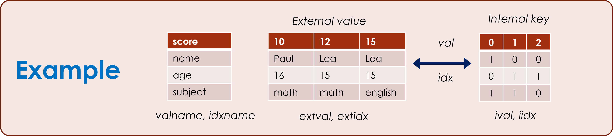
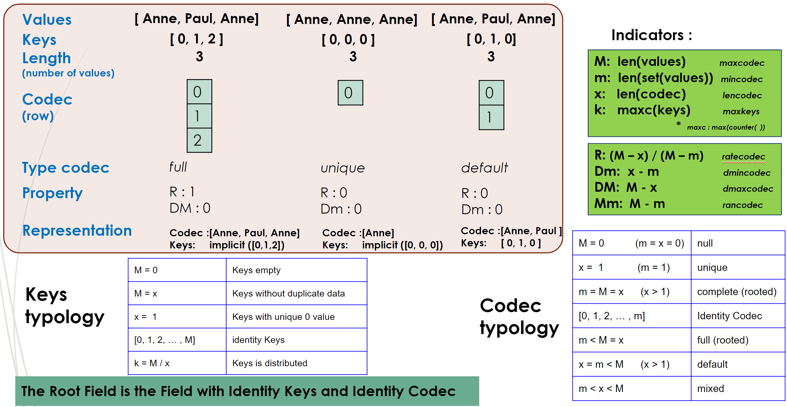
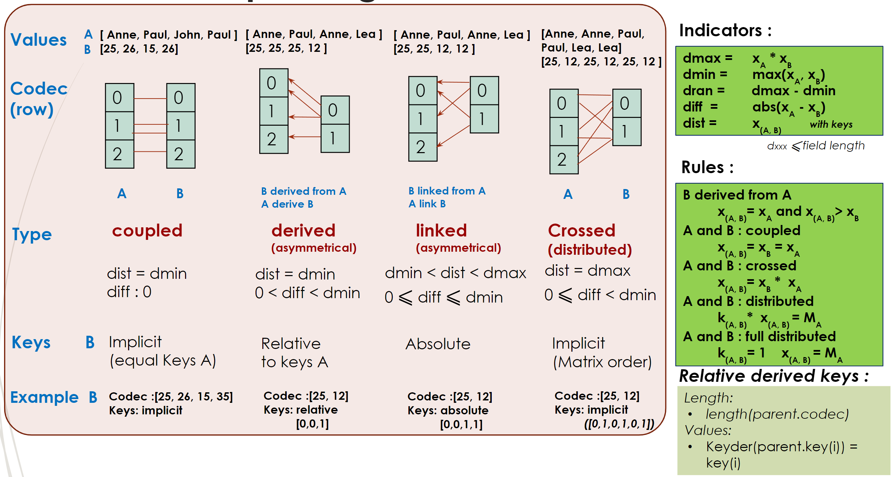
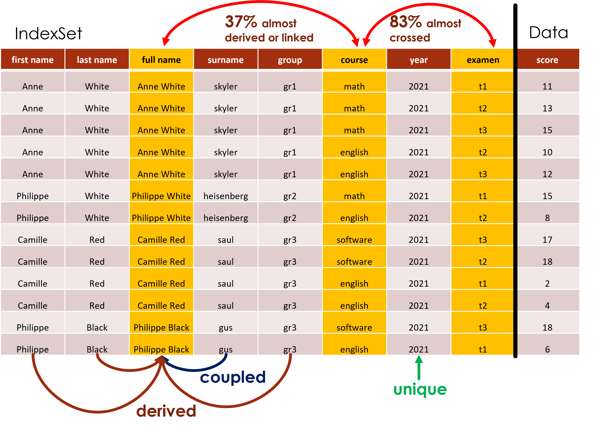

ES.ilist
Created on Sun Jan 2 18:30:14 2022
@author: Philippe@loco-labs.io
The ES.ilist module contains the Ilist class.
What is the Ilist Object ?
The Ilist Object is a combination of a set of data and properties (index) that describe it. In the example below, the set of data is scores of students and the properties are the name, the age and the subject.

The Ilist Object has many properties and can be converted into a matrix (e.g. numpy or Xarray object to perform statistical processing) or into several formats (e.g. json, csv, bytes).

The data model is as follows :

- the user data (extval, extidx) can be everything,
- the internal data (ival, iidx) are integers, which makes the processing to be performed much simpler
- the index user data (extidx) are dynamic to reduce the size of data.
Main principles
Index properties
Index categories
Indexes can be characterized according to the link between external values and internal keys :
- complete index : one internal key for one external values
- unique index : one internal key for all external values
- mixte index : index not complete and not unique

Index relationships
An index can also be characterized based on relationships with another index
There are 4 relationships categories :
- coupled : an index is coupled to another if there is a 1-to-1 correspondence between values
- derived : an index is derived from another if there is a 1-to-n correspondence between values
- crossed : two indexes are crossed if there is a correspondence between all values
- linked : if two indexes are not coupled, derived or crossed

If one index is complete, all the indexes are derived from it. If one index is unique, it is derived from all indexes. If A is derived from B and B is derived from C, A is derived from C. If A is coupled from B, all the relationships with other indexes are identical.
The indicated ratio is defined to measure the 'proximity' between to indexes. The value is between 0% (the indexes are dependant - coupled or derived) and 100% (the indexes are independant : crossed or linked).
Global properties
Index definition
- An index is derived if it’s derived from at least one other index
- An index is coupled if it’s coupled from at least one other index
- An Index is primary if it’s not coupled, not derived and not unique
IndexSet definition
- Dimension : number of primary indexes
- Full : An indexSet is full if all the primary indexes are crossed with each other primary index
- Complete : An indexSet is complete if all the non coupled indexes are crossed with each other non coupled index
Properties
- The number of values of a full indexset is the product of the primary indexes lenght
- A full indexSet is complete
- A full IndexSet can be transformed in a Matrix with the dimension of the indexset
- A complete Indexset can be expressed in a flat list of values (without detailed indexes)
Functions
These properties can be used to modify an indexset in particular to transform an Ilist object into a matrix of chosen dimension
Example
In the example below, 3 columns are linked (Full name, Course, Examen), 3 columns are derived (First name, Last name, Group), 1 column is coupled (Surname), 1 column is unique (Year).

If an index is not primary, index values can be calculated from primary indexes. This property is very usefull if new values have to be added to the Ilist, for example, if we decide to have all the combinations of independant index.
In this example, the 'full' method generates missing data for all combinations of primary indexes fullname, course and examen.
The completed ilist can then be transformed into a 3 dimensions matrix (e.g. Xarray) with one dimension for each primary index. If the dimension required is lower than ilist dimension, the function to_xarray merge the indexes with the lowest coupling rate.
In the example below, a new index 'course-full name' with 'full name' and 'course' is created. So 'course' and 'full name' become derived from the new index and the dimension now becomes 2 :
In [42]: il.to_xarray(fillvalue=math.nan)
Out[42]:
<xarray.DataArray 'Ilist' (full name: 4, course: 3, examen: 3)>
array([[[nan, 10., 12.],
[11., 13., 15.],
[nan, nan, nan]],
[[ 2., 4., nan],
[nan, nan, nan],
[nan, 18., 17.]],
[[ 6., nan, nan],
[nan, nan, nan],
[nan, nan, 18.]],
[[nan, 8., nan],
[15., nan, nan],
[nan, nan, nan]]])
Coordinates:
first name (full name) <U8 'Anne' 'Camille' 'Philippe' 'Philippe'
last name (full name) <U5 'White' 'Red' 'Black' 'White'
* full name (full name) <U14 'Anne White' 'Camille Red' ... 'Philippe White'
surname (full name) <U10 'skyler' 'saul' 'gus' 'heisenberg'
group (full name) <U3 'gr1' 'gr3' 'gr3' 'gr2'
* course (course) <U8 'english' 'math' 'software'
* examen (examen) <U2 't1' 't2' 't3'
In [43]: il.to_xarray(dimmax=2, fillvalue=math.nan)
Out[43]:
<xarray.DataArray 'Ilist' (examen: 3, ["course", "full name"]: 8)>
array([[11., 15., nan, nan, 2., 6., nan, nan],
[13., nan, 10., 8., 4., nan, 18., nan],
[15., nan, 12., nan, nan, nan, 17., 18.]])
Coordinates:
first name (["course", "full name"]) <U8 'Anne' ... 'Philippe'
last name (["course", "full name"]) <U5 'White' ... 'Black'
full name (["course", "full name"]) <U14 'Anne White' ... ...
surname (["course", "full name"]) <U10 'skyler' ... 'gus'
group (["course", "full name"]) <U3 'gr1' 'gr2' ... 'gr3'
course (["course", "full name"]) <U8 'math' ... 'software'
* examen (examen) <U2 't1' 't2' 't3'
* ["course", "full name"] (["course", "full name"]) <U6 '(0, 0)' ... '(2, 3)'
Ilist size
A list of values (e.g. ['Paul', 'John', 'Marie', 'John']) is represented in an indexed list by :
- a list of different values (e.g. ['Paul', 'John', 'Marie'])
- a list of index (e.g. [0, 1, 2, 1])
This representation is similar to Pandas categorical's type.
In term of data volume, there is no duplication (gain) but the index list is added (loss). The graph below shows the size difference between simple list and indexed list.
If the values are small (e.g. int, float), the indexed list is bigger than simple list. If the unicity ratio (number of different values / number of values) is high (> 90%), the indexed list is bigger than simple list. In the other cases, the indexed list is smaller than a simple list (general case of csv files)
aggregation
One of the properties of Ilist object is to be able to index any type of object and in particular Ilist objects. This indexing can be recursive, which makes it possible to preserve the integrity of the data.
A 'merge' method transform the Ilist object thus aggregated into a flat Ilist object.
In the example below, an Ilist object is build for each person. These Ilist objects are then assembled into a summary object which can be disassembled by the function 'merge'.
View Source
# -*- coding: utf-8 -*- """ Created on Sun Jan 2 18:30:14 2022 @author: Philippe@loco-labs.io The `ES.ilist` module contains the `Ilist` class. # What is the Ilist Object ? The Ilist Object is a combination of a set of data and properties (index) that describe it. In the example below, the set of data is scores of students and the properties are the name, the age and the subject. <img src="./ilist_example.png" width="500"> The Ilist Object has many properties and can be converted into a matrix (e.g. numpy or Xarray object to perform statistical processing) or into several formats (e.g. json, csv, bytes). <img src="./ilist_xarray.png" width="400"> The data model is as follows : <img src="./ilist_data_structure.png" width="500"> - the user data (extval, extidx) can be everything, - the internal data (ival, iidx) are integers, which makes the processing to be performed much simpler - the index user data (extidx) are dynamic to reduce the size of data. # Main principles ## Index properties ### Index categories Indexes can be characterized according to the link between external values and internal keys : - complete index : one internal key for one external values - unique index : one internal key for all external values - mixte index : index not complete and not unique <img src="./ilist_index_category.png" width="800"> ### Index relationships An index can also be characterized based on relationships with another index There are 4 relationships categories : - coupled : an index is coupled to another if there is a 1-to-1 correspondence between values - derived : an index is derived from another if there is a 1-to-n correspondence between values - crossed : two indexes are crossed if there is a correspondence between all values - linked : if two indexes are not coupled, derived or crossed <img src="./ilist_link_category.png" width="800"> If one index is complete, all the indexes are derived from it. If one index is unique, it is derived from all indexes. If A is derived from B and B is derived from C, A is derived from C. If A is coupled from B, all the relationships with other indexes are identical. The indicated ratio is defined to measure the 'proximity' between to indexes. The value is between 0% (the indexes are dependant - coupled or derived) and 100% (the indexes are independant : crossed or linked). ### Global properties **Index definition** - An index is derived if it’s derived from at least one other index - An index is coupled if it’s coupled from at least one other index - An Index is primary if it’s not coupled, not derived and not unique **IndexSet definition** - Dimension : number of primary indexes - Full : An indexSet is full if all the primary indexes are crossed with each other primary index - Complete : An indexSet is complete if all the non coupled indexes are crossed with each other non coupled index **Properties** - The number of values of a full indexset is the product of the primary indexes lenght - A full indexSet is complete - A full IndexSet can be transformed in a Matrix with the dimension of the indexset - A complete Indexset can be expressed in a flat list of values (without detailed indexes) ### Functions These properties can be used to modify an indexset in particular to transform an Ilist object into a matrix of chosen dimension <img src="./ilist_process.png" width="800"> ### Example In the example below, 3 columns are linked (Full name, Course, Examen), 3 columns are derived (First name, Last name, Group), 1 column is coupled (Surname), 1 column is unique (Year). <img src="./ilist_index.png" width="800"> If an index is not primary, index values can be calculated from primary indexes. This property is very usefull if new values have to be added to the Ilist, for example, if we decide to have all the combinations of independant index. In this example, the 'full' method generates missing data for all combinations of primary indexes fullname, course and examen. <img src="./ilist_full.png" width="800"> The completed ilist can then be transformed into a 3 dimensions matrix (e.g. Xarray) with one dimension for each primary index. If the dimension required is lower than ilist dimension, the function to_xarray merge the indexes with the lowest coupling rate. In the example below, a new index 'course-full name' with 'full name' and 'course' is created. So 'course' and 'full name' become derived from the new index and the dimension now becomes 2 : ```python In [42]: il.to_xarray(fillvalue=math.nan) Out[42]: <xarray.DataArray 'Ilist' (full name: 4, course: 3, examen: 3)> array([[[nan, 10., 12.], [11., 13., 15.], [nan, nan, nan]], [[ 2., 4., nan], [nan, nan, nan], [nan, 18., 17.]], [[ 6., nan, nan], [nan, nan, nan], [nan, nan, 18.]], [[nan, 8., nan], [15., nan, nan], [nan, nan, nan]]]) Coordinates: first name (full name) <U8 'Anne' 'Camille' 'Philippe' 'Philippe' last name (full name) <U5 'White' 'Red' 'Black' 'White' * full name (full name) <U14 'Anne White' 'Camille Red' ... 'Philippe White' surname (full name) <U10 'skyler' 'saul' 'gus' 'heisenberg' group (full name) <U3 'gr1' 'gr3' 'gr3' 'gr2' * course (course) <U8 'english' 'math' 'software' * examen (examen) <U2 't1' 't2' 't3' In [43]: il.to_xarray(dimmax=2, fillvalue=math.nan) Out[43]: <xarray.DataArray 'Ilist' (examen: 3, ["course", "full name"]: 8)> array([[11., 15., nan, nan, 2., 6., nan, nan], [13., nan, 10., 8., 4., nan, 18., nan], [15., nan, 12., nan, nan, nan, 17., 18.]]) Coordinates: first name (["course", "full name"]) <U8 'Anne' ... 'Philippe' last name (["course", "full name"]) <U5 'White' ... 'Black' full name (["course", "full name"]) <U14 'Anne White' ... ... surname (["course", "full name"]) <U10 'skyler' ... 'gus' group (["course", "full name"]) <U3 'gr1' 'gr2' ... 'gr3' course (["course", "full name"]) <U8 'math' ... 'software' * examen (examen) <U2 't1' 't2' 't3' * ["course", "full name"] (["course", "full name"]) <U6 '(0, 0)' ... '(2, 3)' ``` ## Ilist size A list of values (e.g. ['Paul', 'John', 'Marie', 'John']) is represented in an indexed list by : - a list of different values (e.g. ['Paul', 'John', 'Marie']) - a list of index (e.g. [0, 1, 2, 1]) This representation is similar to Pandas categorical's type. In term of data volume, there is no duplication (gain) but the index list is added (loss). The graph below shows the size difference between simple list and indexed list. <img src="./ilist_size2.png" width="800"> If the values are small (e.g. int, float), the indexed list is bigger than simple list. If the unicity ratio (number of different values / number of values) is high (> 90%), the indexed list is bigger than simple list. In the other cases, the indexed list is smaller than a simple list (general case of csv files) ## aggregation One of the properties of Ilist object is to be able to index any type of object and in particular Ilist objects. This indexing can be recursive, which makes it possible to preserve the integrity of the data. A 'merge' method transform the Ilist object thus aggregated into a flat Ilist object. <img src="./ilist_aggregation.png" width="800"> In the example below, an Ilist object is build for each person. These Ilist objects are then assembled into a summary object which can be disassembled by the function 'merge'. <img src="./ilist_merge.png" width="800"> """ from itertools import product from copy import copy, deepcopy import datetime, cbor2 import json import csv import re import numpy as np import pandas as pd import xarray #from bson import decode, encode import bson from ESValue import LocationValue, DatationValue, PropertyValue, ResultValue import math from collections import Counter from ESconstante import ES #from time import time def identity(*args, **kwargs): '''return the same value as args or kwargs''' if len(args) > 0 : return args[0] if len(kwargs) > 0 : return kwargs[list(kwargs.keys())[0]] return None class IlistEncoder(json.JSONEncoder): """add a new json encoder for Ilist""" def default(self, o) : if isinstance(o, datetime.datetime) : return o.isoformat() option = {'encoded': False, 'encode_format': 'json'} try : return o.json(**option) except : try : return o.__to_json__() except : return json.JSONEncoder.default(self, o) class CborDecoder(json.JSONDecoder): def __init__(self): json.JSONDecoder.__init__(self, object_hook=self.codecbor) def codecbor(self, dic): dic2 = {} for k, v in dic.items(): try: k2 = int(k) except: k2 = k dic2[k2] = v return dic2 class Ilist: #%% intro ''' An `Ilist` is a representation of an indexed list (a list is indexed by others list). E.g. python zip or csv file. *Attributes (for @property see methods)* : - **extval** : list of data to be indexed - **valname** : name of the extval list - **setval** : list of the different extval values (dynamic value) - **ival** : index of the extval (dynamic value) - **extidx** : list of index (dynamic value) - **idxname** : list of the index name - **setidx** : list of the different idxval values - **iidx** : index of the extidx list of values The methods defined in this class are : *constructor (classmethod))* - `Ilist.Iidic` - `Ilist.Iext` - `Ilist.Iidx` - `Ilist.Iset` - `Ilist.Izip` *dynamic value property (getters)* - `Ilist.ival` - `Ilist.setval` - `Ilist.extidx` - `Ilist.tiidx` - `Ilist.textidx` *global property (getters)* - `Ilist.axes` - `Ilist.axesall` - `Ilist.axesmin` - `Ilist.axesmono` - `Ilist.axesmulti` - `Ilist.complete` - `Ilist.completefull` - `Ilist.consistent` - `Ilist.dimension` - `Ilist.lencomplete` - `Ilist.lencompletefull` - `Ilist.rate` - `Ilist.setvallen` - `Ilist.zip` *idx property (getters)* - `Ilist.dicidxref` - `Ilist.idxcoupled` - `Ilist.idxderived` - `Ilist.idxder` - `Ilist.idxlen` - `Ilist.idxref` - `Ilist.idxunique` - `Ilist.ind` - `Ilist.lenidx` - `Ilist.minMaxIndex` *add - update methods* - `Ilist.addextidx` - `Ilist.addlistidx` - `Ilist.append` - `Ilist.appendi` - `Ilist.updateidx` - `Ilist.updatelist` *selecting methods* - `Ilist.extidxtoi` - `Ilist.iidxtoext` - `Ilist.iloc` - `Ilist.iseIndex` - `Ilist.isiIndex` - `Ilist.isValue` - `Ilist.loc` - `Ilist.setname` - `Ilist.unconsistent` *management - conversion methods* - `Ilist.axescoupling` - `Ilist.couplingmatrix` - `Ilist.derived_to_coupled` - `Ilist.full` - `Ilist.merge` - `Ilist.mergeidx` - `Ilist.reindex` - `Ilist.reorder` - `Ilist.setfilter` - `Ilist.sort` - `Ilist.sortidx` - `Ilist.swapindex` *exports methods* - `Ilist.from_obj` (classmethod) - `Ilist.from_csv` (classmethod) - `Ilist.from_file` (classmethod) - `Ilist.json` - `Ilist.to_obj` - `Ilist.to_csv` - `Ilist.to_file` - `Ilist.to_numpy` - `Ilist.to_xarray` - `Ilist.vlist` ''' __slots__ = 'extval', 'iidx', 'setidx', 'valname', 'idxname' _c1 = re.compile('\d+\.?\d*[,\-_ ;:]') _c2 = re.compile('[,\-_ ;:]\d+\.?\d*') #%% constructor @classmethod # !!! class methods def Iidic(cls, dictvaliidx, dictsetidx, order=[], idxref=[], defaultidx=True): ''' Ilist constructor (dictionnary data). *Parameters* - **dictvaliidx** : {valname : valiidx} with valiidx=list(list(val, indexval)) - **dictsetidx** : {idxname0 : setidx0, ... , idxnamen : setidxn} - **order** : list (default []) of axes used if there is no indexval in valiidx - **idxref** : list (default []) of reference axes used if there is no indexval in valiidx - **defaultidx** : boolean (default True). If True, a generic index is generated if no index is defined *Returns* - **Ilist** ''' return cls(*Ilist._initdict(dictvaliidx, dictsetidx, order, idxref), defaultidx) @classmethod def Iset(cls, valiidx, setidx, order=[], idxref=[], valname='value', idxname=[], defaultidx=True): ''' Ilist constructor (list data with indexed values ). *Parameters* - **valiidx** : coupled val / index list : list(list(val, indexval)) - **setidx** : external different values of index (see data model) - **order** : list (default []) of axes used if there is no indexval in valiidx - **idxref** : list (default []) of reference axes used if there is no indexval in valiidx - **valname** : string (default 'value') name of indexed list (see data model) - **idxname** : list of string (default []) name of index list (see data model) - **defaultidx** : boolean (default True). If True, a generic index is generated if no index is defined *Returns* - **Ilist** ''' if not isinstance(valiidx, list) : validx = [valiidx] else : validx = valiidx (val, iidx) = Ilist._initset(validx, setidx, idxref, order) return cls(val, setidx, iidx, valname, idxname, defaultidx) @classmethod def Iidx(cls, extval, idxlen, idxref=[], order=[], valname='value', idxname=[], defaultidx=True): ''' Ilist constructor (automatic index). *Parameters* - **extval** : indexed list (see data model) - **idxlen** : integer - number of index - **idxref** : list (default []) of reference axes used - **order** : list (default []) of axes used to order the index - **valname** : string (default 'value') name of indexed list (see data model) - **idxname** : list of string (default []) name of index list (see data model) - **defaultidx** : boolean (default True). If True, a generic index is generated if no index is defined *Returns* - **Ilist** ''' iidx = Ilist._initiidx(len(extval), idxlen, idxref, order, defaultidx) return cls(extval, [], iidx, valname, idxname, defaultidx) @classmethod def Iedic(cls, dicval={'value':[]}, dicidx={}, defaultidx=True, fast=False): ''' Ilist constructor (external dictionnary). *Parameters* - **dicval** : {valname : extval} (see data model) - **dicidx** : {idxname[0] : extidx[0], ... , idxname[n] : extidx[n]} (see data model) - **defaultidx** : boolean (default True). If True, a generic index - **fast** : boolean (default False). If True, fast operation (reduction controls) is generated if no index is defined *Returns* - **Ilist** ''' valname = list(dicval.keys())[0] extval = dicval[valname] idxname = list(dicidx.keys()) extidx = [dicidx[name] for name in idxname] return cls.Iext(extval, extidx, valname, idxname, defaultidx, fast) @classmethod def Iext(cls, extval=[], extidx=[], valname='value', idxname=[], defaultidx=True, fast=False): ''' Ilist constructor (external index). *Parameters* - **extval** : indexed list (see data model) - **extidx** : index list (see data model) - **valname** : string (default 'value') name of indexed list (see data model) - **idxname** : list of string (default []) name of index list (see data model) - **defaultidx** : boolean (default True). If True, a generic index - **fast** : boolean (default False). If True, fast operation (reduction controls) is generated if no index is defined *Returns* - **Ilist** ''' if type(extval) != list and type(extidx) != list : return None if defaultidx and (type(extidx) != list or extidx == []) : ext = [list(range(len(extval)))] idxname = ['default index'] elif extidx != [] and type(extidx[0]) != list : ext = [extidx] else : ext = extidx setidx, iidx = Ilist._resetidx(ext, fast) return cls(extval, setidx, iidx, valname, idxname, defaultidx) @classmethod def Izip(cls, *args): ''' Ilist constructor (external index only). *Parameters* - **args** : index list extidx=list(args) (see data model) *Returns* - **Ilist** ''' return cls.Iext(extval=[], extidx=list(args), valname='value', idxname=[], defaultidx=True) def __init__(self, extval=[], setidx=[], iidx=[], valname='value', idxname=[], defaultidx=True): ''' Ilist constructor. *Parameters* - **extval** : list (default []) - indexed list (see data model) - **setidx** : list (default []) - external different values of index (see data model) - **iidx** : list (default []) - integer value of index (see data model) - **valname** : string (default 'value') - name of indexed list (see data model) - **idxname** : list of string (default []) - name of index list (see data model) - **defaultidx** : boolean (default True) - If True, a generic index is generated if no index is defined *Returns* : None''' if type(extval) != list and type(iidx) != list : return if defaultidx and (type(iidx) != list or iidx == []) : iindex = [list(range(len(extval)))] if idxname == [] : idxname = ['default index'] elif iidx != [] and type(iidx[0]) != list : iindex = [iidx] else : iindex = iidx if type(setidx) != list or setidx == [] : setindex = [Ilist._toset(idx) for idx in iindex] elif type(setidx[0]) != list : setindex = [setidx] else : setindex = setidx if type(extval) != list : extvalue = [extval] elif extval == [] and iindex == [] : extvalue = [] elif extval == [] and type(iindex[0]) == list: extvalue = [True for idx in iindex[0]] valname = 'default value' else : extvalue = extval self.extval = extvalue self.iidx = iindex self.setidx = setindex self.valname = valname self.idxname = ['idx' + str(i) for i in range(max(len(iindex), len(setindex)))] if type(idxname) == list : for i in range(len(idxname)) : if type(idxname[i]) == str : self.idxname[i] = idxname[i] @staticmethod def _initdict(dictvaliidx, dictsetidx, order=[], idxref=[]): ''' generate extval, setidx, iidx, valname and idxname''' valname = 'value' validx = [] if len(dictvaliidx) == 1 : valname = list(dictvaliidx.keys())[0] validx = dictvaliidx[valname] setidx = [] idxname = [] for k,v in dictsetidx.items() : if type(v) == list : vl = v else : vl = [v] idxname.append(k) setidx.append(vl) (extval, iidx) = Ilist._initset(validx, setidx, idxref, order) return (extval, setidx, iidx, valname, idxname) @staticmethod def _initiidx(vallen, idxlen, idxref, order, defaultidx=True): ''' generate a generic iidx''' if vallen == 0 or idxlen == []: return [] if idxlen == [0,0,0] : return [ [], [], [] ] if min(idxlen) == 0 : return [] if idxref == [] and defaultidx : ref = list(range(len(idxlen))) else : ref = idxref if order == [] : orde = list(range(len(idxlen))) else : orde = order if not len(idxlen) == len(ref): raise IlistError("idxref and idxlen should have the same lenght") idxcoupled = [i for i in range(len(idxlen)) if ref[i] != i] axes=list(set(ref)) axesord = [] for i in orde : iref = ref[i] if iref in axes and iref not in axesord : axesord.append(iref) for i in axes : if i not in axesord : axesord.append(i) iiord = [list(range(idxlen[i])) for i in axesord] iidxord = Ilist._transpose(list(product(*iiord))) if vallen != len(iidxord[0]): raise IlistError("val lenght is not consistent with index lenght") iidx = list(range(len(iidxord))) for i in axes : iidx[axes.index(i)] = iidxord[axesord.index(i)] for i in idxcoupled : iidx.insert(i,iidx[ref[i]]) return iidx @staticmethod def _initset(validx, setidx, idxref, order, defaultidx=True): ''' generate extval and iidx ''' if validx == [] : extval = [] iidx = [[] for i in setidx] elif type(validx[0]) != list : extval = validx idxlen = [len(ind) for ind in setidx] iidx = Ilist._initiidx(len(extval), idxlen, idxref, order, defaultidx) else : tvalidx = Ilist._transpose(validx) extval = tvalidx[0] iidx = Ilist._transpose(tvalidx[1]) return (extval, iidx) #%% special def __repr__(self): ''' return ival and iidx''' texLis = '' for idx in self.iidx : texLis += '\n' + json.dumps(idx) return json.dumps(self.ival) + '\n' + texLis def __str__(self): ''' return valname, extval, idxname and extidx''' texLis = '' option = {'encoded': True, 'encode_format': 'json'} for (idx, nam) in zip(self.extidx, self.idxname) : texLis += '\n' + nam + ' : ' + self._json(idx, **option) return self.valname + ' : ' + self._json(self.extval, **option) + '\n' + texLis def __eq__(self, other): ''' equal if extval and extidx are equal''' try: return self.extval == other.extval and self.extidx == other.extidx except: return False def __len__(self): ''' len of extval''' return len(self.extval) def __contains__(self, item): ''' item of extval''' return item in self.extval def __getitem__(self, ind): ''' return extval item''' return self.extval[ind] def __setitem__(self, ind, val): ''' modify extval item''' if ind < 0 or ind >= len(self) : raise IlistError("out of bounds") self.extval[ind] = val def __add__(self, other): ''' Add other's values to self's values in a new Ilist''' newilist = self.__copy__() newilist.__iadd__(other) return newilist def __iadd__(self, other): ''' Add other's values to self's values''' return self.iadd(other, unique=True) def __or__(self, other): ''' Add other's index to self's index in a new Ilist''' newilist = self.__copy__() newilist.__ior__(other) return newilist def __ior__(self, other): ''' Add other's index to self's index''' if len(self) != len(other) : raise IlistError("the sizes are not equal") for i in range(other.lenidx): if other.idxname[i] not in self.idxname : self.addlistidx(other.idxname[i], other.setidx[i], other.iidx[i]) return self def __copy__(self): ''' Copy all the data (deepcopy)''' return deepcopy(self) #%% property @property def axes(self): #!!!!trop long, à clarifier ''' return the list of independant axes (not coupled and not unique)''' idxlen = self.idxlen idxref = self.idxref idxcoupled = [idxref[i] != i for i in range(self.lenidx)] # temps de réponse #idxcoupled = self.idxcoupled axes = list(filter(lambda x: x >= 0, set(list(map( lambda x,y,z : -1 if (x <= 1 or y) else z, idxlen, idxcoupled, idxref))))) if self.lenidx > 0 and not axes : axes = [0] return axes #return self.axesmin @property def axesall(self): ''' return the list of all axes ''' return list(range(self.lenidx)) """@property def axeslen(self): ''' return the list of axes lenght ''' idxlen = self.idxlen return [idxlen[axe] for axe in self.axes]""" @property def axesmin(self): ''' return the list of independant axes (not coupled, not derived and not unique)''' axes = [] idxcoupled= self.idxcoupled idxunique = self.idxunique idxderived= self.idxderived lenidx = self.lenidx for i in range(lenidx): if not idxcoupled[i] and not idxunique[i] and not idxderived[i]: axes.append(i) if lenidx > 0 and not axes : axes = [0] return axes @property def axesmono(self): ''' return the list of axes with one value ''' idxlen = self.idxlen return [i for i in range(len(idxlen)) if idxlen[i] == 1] @property def axesmulti(self): ''' return the list of axes with more than one value ''' idxlen = self.idxlen return [i for i in range(len(idxlen)) if idxlen[i] > 1] @property def complete(self): '''return a boolean (True if Ilist is complete and consistent)''' return self.lencomplete == len(self) and self.consistent @property def completefull(self): '''return a boolean (True if Ilist is full complete and consistent)''' return self.lencompletefull == len(self) and self.consistent @property def consistent(self): '''return a boolean (True if Ilist is consistent : only one extval for one list of index values''' tiidx = self.tiidx return len(set(self._tuple(tiidx))) == len(self) @property def dicidxref(self): '''return a dict with pair of coupled index (index name)''' dic = {} idxlen = self.idxlen idxref = self.idxref for i in range(len(idxref)): if idxref[i] != i and idxlen[i] > 1: dic[self.idxname[i]] = self.idxname[idxref[i]] return dic @property def dimension(self): ''' return an integer : the number of index non coupled and non unique''' return len(self.axesmin) @property def extidx(self): '''return extidx (see data model)''' if len(self.iidx) == 0 : return [] return [ [self.setidx[i][self.iidx[i][j]] for j in range(len(self.iidx[i]))] for i in range(len(self.iidx))] @property def idicidxref(self): '''return a dict with pair of coupled index (index row)''' dic = {} idxlen = self.idxlen idxref = self.idxref for i in range(len(idxref)): if idxref[i] != i and idxlen[i] > 1: dic[i] = idxref[i] return dic @property def idxcoupled(self): '''return a list of boolean for each index (True if coupled)''' idxref = self.idxref return [idxref[i] != i for i in range(self.lenidx)] @property def idxder(self): '''return the list of derived index''' lenidx = self.lenidx lis = list(range(lenidx)) for i in range(len(lis)): for j in range(len(lis)): if i != j and self._derived(self.iidx[i], self.iidx[j]): lis[i] = j break while lis != [lis[lis[i]] for i in range(lenidx)] : lis = [lis[lis[i]] for i in range(lenidx)] return lis @property def idxderived(self): '''return a list of boolean for each index (True if derived)''' idxder = self.idxder return [idxder[i] != i for i in range(self.lenidx)] @property def idxlen(self): ''' return the list of setidx lenght ''' return [len(seti) for seti in self.setidx] @property def idxref(self): '''return the list of reference index''' lis = list(range(self.lenidx)) for i in range(1,len(lis)): for j in range(i): if self._coupled(self.iidx[i], self.iidx[j]): lis[i] = j break return lis @property def idxunique(self): '''return a list of boolean for each index (True if unique)''' idxlen = self.idxlen return [ idl == 1 for idl in idxlen] @property def ind(self): '''return the textidx (see data model)''' return self._transpose(self.extidx) @property def ival(self): '''return the ival (see data model)''' return self._toint(self.extval, self.setval) @property def lencomplete(self): ''' return an integer : number of values if complete (prod(idxlen,not coupled))''' idxcoupled = self.idxcoupled idxlen = self.idxlen return self._mul(list(map(lambda x,y: max((1-x)*y,1), idxcoupled, idxlen))) @property def lencompletefull(self): ''' return an integer : number of values if full complete (prod(idxlen,not coupled, not derived))''' axes = self.axesmin return self._mul([self.idxlen[ax] for ax in axes]) @property def lenidx(self): ''' return an integer : number of index''' return len(self.iidx) @property def minMaxIndex(self): ''' return a list : [ minimal value of index, maximal value of index]''' if self.lenidx == 0 or len(self) == 0 : return [None, None] maxInd = minInd = self.extidx[0][0] try: for idx in self.extidx: minInd = min(minInd, min(idx)) maxInd = max(maxInd, max(idx)) except: minInd = None maxInd = None return [minInd, maxInd] @property def rate(self): '''return the float ratio : len / lencompletefull''' return len(self) / self.lencompletefull @property def setval(self): '''return the setval (see data model)''' return self._toset(self.extval) @property def setvallen(self): ''' return the integer lenght of setval (see data model)''' return len(self.setval) @property def textidx(self): '''return the textidx (see data model)''' return self._transpose(self.extidx) @property def tiidx(self): '''return the tiidx (see data model)''' return self._transpose(self.iidx) @property def zip(self): '''return a zip format for textidx : tuple(tuple(idx)''' textidx = self.textidx return tuple(tuple(idx) for idx in textidx) #%% methods def addextidx(self, idxname, extidx): ''' add a new index with name = idxname and extidx. *Parameters* - **idxname** : string - name of index list (see data model) - **extidx** : list - new index list (see data model) *Returns* : none ''' self.addlistidx(idxname, self._toset(extidx), self._toint(extidx, self._toset(extidx))) def addlistidx(self, idxname, setidx, iidx): ''' add a new index with name = idxname and setidx / iidx. *Parameters* - **idxname** : string - name of index list (see data model) - **setidx** : list - external different values of index (see data model) - **iidx** : list - integer value of index (see data model) *Returns* : none ''' if type(iidx) != list or len(iidx) != len(self): raise IlistError("listindex out of bounds") if self.lenidx == 1 and self.iidx[0] == list(range(len(self))) : self.setidx[0] = setidx self.iidx[0] = iidx self.idxname[0] = idxname else : self.setidx .append(setidx) self.iidx .append(iidx) self.idxname.append(idxname) def append(self, extval, extind, unique=False, fast=False): ''' add a new value extval with index extind. *Parameters* - **extval** : new object value - **extind** : list - new index values to add to extidx - **unique** : boolean (default False) - If True and extidx present - **fast** : boolean (default False) - Update whithout reindex in textidx append is refuse. *Returns* : none ''' if self.iseIndex(extind) and (unique or self.isValue(extval)): return if fast : self.extval.append(extval) iind = self._updateset(extind) for ind, idx in zip(iind, self.iidx) : idx.append(ind) return self.extval.append(extval) tiidx = self.tiidx tiidx.append(self._updateset(extind)) self.iidx = self._transpose(tiidx) self.setidx, self.iidx = self._resetidx(self.extidx) return def appendi(self, extval, intind, unique=False): ''' add a new value extval with index intind. *Parameters* - **extval** : new object value - **intind** : list - new index values to add to iidx - **unique** : boolean (default False) - If True and intind present in tiidx append is refuse. *Returns* : none ''' if (self.isiIndex(intind) and unique) or \ (self.isValue(extval) and self.isiIndex(intind)): return self.extval.append(extval) tiidx = self.tiidx tiidx.append(intind) self.iidx = self._transpose(tiidx) self.setidx, self.iidx = self._resetidx(self.extidx) def axescoupling(self, axes=None): ''' return the list of independant axes (not coupled, not derived and not unique) with coupling order (most coupling first) *Parameters* - **axes** : list of int (default None) - list of axes *Returns* : list ''' if not axes: axes = self.axesmin if len(axes) < 2: return axes axe = [ax for ax in axes if ax in self.axesmin] order = [] df = pd.DataFrame(self.couplingmatrix()) for i in range(len(axe)-1): df2 = df.iloc[axe, axe] ax = df2.sum().sort_values().index[0] order.insert(0, ax) axe.remove(ax) order.insert(0, axe[0]) return order def couplingmatrix(self, file=None): '''return a matrix ratio with coupling ratio between each axes. The matrix is return or stored in a file (csv format). *Parameters* - **file** : string (default None) - name of the file. If None, the array is returned. *Returns* : array or None''' mat = [[self._couplinginfo(self.iidx[i], self.iidx[j])['rate'] for j in range(self.lenidx)] for i in range(self.lenidx)] if not file: return mat with open(file, 'w', newline='') as f: writer = csv.writer(f) writer.writerow(self.idxname) for i in range(self.lenidx): writer.writerow(mat[i]) writer.writerow(self.idxlen) return None def derived_to_coupled(self, idxder, idxref): ''' Transform a derived index in a coupled index (new setidx). *Parameters* - **idxder** : number of the derived index. - **idxref** : number of the index to be coupled. *Returns* : None''' dic=self._idxlink(self.iidx[idxref], self.iidx[idxder], coupled=False, derived=True) if not dic: raise IlistError("idx is not derived from the other") setidx = [self.setidx[idxder][dic[i]] for i in range(self.idxlen[idxref])] self.setidx[idxder] = setidx self.iidx[idxder] = self.iidx[idxref] def extidxtoi(self, extind): ''' convert an extind (value for each extidx) to an intind (value for each iidx). *Parameters* - **extind** : value for each extidx *Returns* - **list** : intind, value for each iidx''' try : return [self.setidx[i].index(extind[i]) for i in range(len(extind))] except : return None @classmethod def from_obj(cls, bs): ''' Generate an Ilist Object from a bytes, json or dict value *Parameters* - **bs** : bytes or string data to convert *Returns* : Ilist ''' setidx = [] extval = [] if isinstance(bs, bytes): if bs[len(bs)-1] != 0x00 and (bs[0] & 0b11100000)== 0b10100000: dic2 = cbor2.loads(bs) else: dic2 = bson.decode(bs) elif isinstance(bs, str) : dic2 = json.loads(bs, object_hook=CborDecoder().codecbor) elif isinstance(bs, dict): dic2 = bs else: raise IlistError("the type of parameter is not available") dic = {} for k,v in dic2.items(): if k in ES.invcodeb: dic[ES.invcodeb[k]] = v else: dic[k] = v if '_id' in dic: dic.pop('_id') if 'order' in dic and len(dic['order'])>0: idxname = dic['order'] setidx = list(range(len(idxname))) else: idxname = [] setidx = [] if 'idxref' in dic: idxref = dic['idxref'] else: idxref = {} valname = 'default value' for elmt in dic: if elmt in idxname and isinstance(dic[elmt], list): setidx[idxname.index(elmt)] = dic[elmt] elif elmt in idxname and not isinstance(dic[elmt], list): setidx[idxname.index(elmt)] = [dic[elmt]] elif elmt not in ['idxref', 'order', 'index']: valname = elmt extval = dic[elmt] idxlen = [len(setid) for setid in setidx] axesmulti = [i for i in range(len(idxlen)) if idxlen[i] > 1] if 'index' in dic: '''if isinstance(dic['index'], list): iidx = dic['index'] else: iidx = np.frombuffer(dic['index'], dtype='u2') \ .reshape((len(idxname),len(extval))).tolist()''' if isinstance(dic['index'], list): iidxmulti = dic['index'] else: iidxmulti = np.frombuffer(dic['index'], dtype='u2') \ .reshape((len(axesmulti),len(extval))).tolist() lismono = [0 for i in range(len(extval))] iidx = [iidxmulti[axesmulti.index(i)] if i in axesmulti \ else lismono for i in range(len(idxname))] return cls(extval, setidx, iidx, valname, idxname) else: iidxref = list(range(len(idxname))) for key, val in idxref.items() : keyn = idxname.index(key) valn = idxname.index(val) iidxref[max(keyn, valn)] = min(keyn, valn) iidx = cls._initiidx(len(extval), idxlen, iidxref, list(range(len(idxname))), defaultidx=True) return cls(extval, setidx, iidx, valname, idxname) """@classmethod def from_bytes(cls, bs): ''' Generate an Ilist Object from a bytes value *Parameters* - **bson** : bytes data to convert *Returns* : Ilist ''' setidx = [] if isinstance(bs, bytes) : dic = bson.decode(bs) else : dic = bs if '_id' in dic : dic.pop('_id') names = list(dic) valname = names[0] idxname = names[2:len(dic)] extval = Ilist._frombytes(dic[names[0]]) for name in idxname : setidx.append(Ilist._frombytes(dic[name])) if isinstance(dic[names[1]], list): iidx = dic[names[1]] else: iidx = np.frombuffer(dic[names[1]], dtype='u2').reshape((len(idxname), len(extval))).tolist() return cls(extval, setidx, iidx, valname, idxname)""" @classmethod def from_csv(cls, filename='ilist.csv', valfirst=False, header=True, dtype=None, **kwargs): ''' Ilist constructor (from a csv file). Each column represents extidx or extval values. *Parameters* - **filename** : string (default 'ilist.csv'), name of the file to read - **valfirst** : boolean (default False). If False extval is the last columns else it's the first - **header** : boolean (default True). If True, the first raw is dedicated to names - **dtype** : list of string (default None) - data type for each column (default str) : str, int, float, datetime, coord - **kwargs** : see csv.reader options *Returns* - **Ilist** ''' extval=[] extidx=[] valname='value' idxname=[] if not dtype : dtype =[None] with open(filename, newline='') as f: reader = csv.reader(f, **kwargs) first=True for row in reader: if first : for vrow in row[1:] : extidx.append([]) if first and header : if valfirst : valname = str(row[0]) for vrow in row[1:] : idxname.append(str(vrow)) else : valname = str(row[len(row)-1]) for vrow in row[:len(row)-1] : idxname.append(str(vrow)) else : if valfirst : extval.append(Ilist._cast(row[0], dtype[0])) for i in range(len(row)-1) : extidx[i].append(Ilist._cast(row[i+1], dtype[min(i+1, len(dtype)-1)])) else : extval.append(Ilist._cast(row[len(row)-1], dtype[min(len(row)-1, len(dtype)-1)])) for i in range(len(row)-1) : extidx[i].append(Ilist._cast(row[i], dtype[min(i, len(dtype)-1)])) first = False return cls.Iext(extval, extidx, valname, idxname) @classmethod def from_file(cls, file, forcestring=False) : ''' Generate `Ilist` object from file storage. *Parameters* - **file** : string - file name (with path) - **forcestring** : boolean (default False) - if True, forces the UTF-8 data format, else the format is calculated *Returns* : Ilist object''' with open(file, 'rb') as f: btype = f.read(2) if btype==bytes('{"', 'UTF-8') or forcestring: with open(file, 'r', newline='') as f: bjson = f.read() else: with open(file, 'rb') as f: bjson = f.read() return cls.from_obj(bjson) def full(self, axes=[], fillvalue=None, inplace=False): ''' add new extval with new extidx to have a complet Ilist *Parameters* - **axes** : list (default []) - list of index to be completed. If [], self.axesmin is used. - **fillvalue** : object value used for the new extval - **inplace** : boolean (default True) - if True, new values are added, if False a new Ilist is created. *Returns* - **None**, if inplace. Ilist if not inplace''' if not self.consistent : raise IlistError("unable to generate full Ilist with inconsistent Ilist") if not axes : axe = self.axesmin else: axe = axes iidxadd = self._idxfull(axes=axe) if not iidxadd and inplace : return if not iidxadd and not inplace : return deepcopy(self) iidxfull = [] for idx, idxadd in zip(self.iidx, iidxadd) : iidxfull.append(idx + idxadd) extvalfull = copy(self.extval) extvalfull += [self._nullValue(type(extvalfull[0]), fillvalue) for i in range(len(iidxadd[0]))] '''tiidxfull = self.tiidx extvalfull = copy(self.extval) for ind in self._transpose(self._idxfull(axes=axe)) : if ind not in tiidxfull : tiidxfull.append(ind) extvalfull.append(self._nullValue(type(extvalfull[0]), fillvalue)) iidxfull = self._transpose(tiidxfull)''' if inplace : self.extval = extvalfull self.iidx = iidxfull return None return Ilist(extvalfull, self.setidx, iidxfull, self.valname, self.idxname) def iadd(self, other, unique=False): ''' Add other's values to self's values *Parameters* - **other** : Ilist to be copied - **unique** : boolean (default False) - If True and iidx present in tiidx, append is refuse. *Returns* : None''' if self.lenidx != other.lenidx : raise IlistError("the index lenght have to be equal") for val,extidx in zip(other.extval, other.textidx) : self.append(val, extidx, unique) for i in range(self.lenidx) : if self.idxname[i][0:3] == 'idx' and other.idxname[i][0:3] != 'idx' : self.idxname[i] = other.idxname[i] if self.valname[0:5] == 'value' and other.valname[0:5] != 'value' : self.valname = other.valname return self def iidxtoext(self, intind): ''' convert an intind (value for each iidx) to an extind (value for each extidx). *Parameters* - **intind** : value for each iidx *Returns* - **list** : extind, value for each extidx''' try : return [self.setidx[i][intind[i]] for i in range(len(intind))] except : return None def iloc(self, intind): ''' Return extval corresponding to intind. *Parameters* - **intind** : list - value for each iidx *Returns* - **object** : extval value ''' try : ival = self.tiidx.index(intind) except : raise IlistError('index not found') return self.extval[ival] def iseIndex(self, extind): ''' Return True if extind is present in extidx. *Parameters* - **extind** : list - value for each extidx *Returns* : boolean - True if found''' intind = self.extidxtoi(extind) if intind is not None and intind in self.tiidx : return True return False def isiIndex(self, intind): ''' Return True if intind is present in iidx. *Parameters* - **intind** : list - value for each iidx *Returns* : boolean - True if found''' if intind is not None and intind in self.tiidx : return True return False def isValue(self, extval): ''' Return True if present in extval. *Parameters* - **extval** : value to test *Returns* : boolean - True if found''' if extval in self.extval : return True return False def json(self, **kwargs): ''' Return json dict or string. *Parameters (kwargs)* - **encoded** : boolean (default False) - choice for return format (bynary if True, dict else) - **encode_format** : string (default 'json') - choice for return format (json, bson or cbor) - **json_res_index** : default False - if True add the index to the value - **order** : default [] - list of ordered index - **fast** : boolean (default False). If True, fast operation (reduction controls) - **codif** : dict (default {}). Numerical value for string in CBOR encoder *Returns* : string or dict''' #option = kwargs | {'bjson_bson': False} option = {'encode_format': 'json', 'encoded' : False, 'codif' : {}} | kwargs return self.to_obj(**option) def loc(self, extind): ''' Return extval corresponding to extind. *Parameters* - **extind** : list - value for each extidx *Returns* - **object** : extval value ''' intind = self.extidxtoi(extind) try : ival = self.tiidx.index(intind) except : raise IlistError('index not found') return self.extval[ival] def merge(self, valname='merge', fillvalue=None): ''' Merge replaces Ilist objects included in extval data into its constituents. *Parameters* - **valname** : str (default 'merge') - name of the new Ilist object - **fillvalue** : object (default None) - value used for the new data (e.g. apply a new index to another Ilist) *Returns* - **Ilist** : merged Ilist ''' if not isinstance(self.extval[0], Ilist): return None idxname = sorted(list(set(self.idxname + [nam for il in self.extval for nam in il.idxname]))) if len(idxname) > 1 and 'default index' in idxname: idxname.remove('default index') extidx = list(list() for i in range(len(idxname))) extval = [] for i in range(len(self)): il = self.extval[i] extval += il.extval for nam in idxname: extiidx = extidx[idxname.index(nam)] if nam in self.idxname and nam not in il.idxname: extiidx += [self.extidx[self.idxname.index(nam)][i] for j in range(len(il))] elif nam not in self.idxname and nam not in il.idxname: extiidx += [fillvalue for j in range(len(il))] else: extiidx += il.extidx[il.idxname.index(nam)] ilm = Ilist.Iext(valname=valname, extval=extval, idxname=idxname, extidx=extidx) if isinstance(ilm.extval[0], Ilist): return ilm.merge(valname=valname, fillvalue=fillvalue) else: return ilm def mergeidx(self, listidx): ''' Create a new index with tuple built from the indexes in listidx. Append the new index to ilist *Parameters* - **listidx** : list - list of index row to be merged *Returns* : None''' name = json.dumps([self.idxname[i] for i in listidx]) extidx = self._str(self._tuple(self._transpose([self.iidx[i] for i in listidx]))) #extidx = self._mergeidx([self.iidx[i] for i in listidx]) self.addextidx(name, extidx) return None def reindex(self, index=[], fast=False): ''' Define new sorted index. *Parameters* - **index** : list (default [])- list of the index to reindex. If [] all the index are reindexed. *Returns* : None''' if index == [] : index = list(range(len(self.setidx))) for ind in index : oldidx = self.setidx[ind] self.setidx[ind] = sorted(self.setidx[ind]) self.iidx[ind] = Ilist._reindexidx(self.iidx[ind], oldidx, self.setidx[ind], fast) def reorder(self, sort=[], inplace=True, fast=False): ''' Change the order of extval and iidx with a new order define by sort (sort can be a subset of the items list). *Parameters* - **sort** : list (default [])- new record order to apply. If [], no change. - **fast** : boolean (default False). If True, fast operation (reduction controls) - **inplace** : boolean (default True) - if True, new order is apply to self, if False a new Ilist is created. *Returns* - **None**, if inplace. **Ilist** if not inplace''' selfextidx = self.extidx extval = self._reorder(self.extval, sort) iidx = [self._reorder(idx, sort) for idx in self.iidx] extidx = [self._reorder(eidx, sort) for eidx in selfextidx] setidx, iidx = self._resetidx(extidx, fast=fast) if inplace : self.extval = extval self.iidx = iidx self.setidx = setidx return None return Ilist(extval, setidx, iidx, self.valname, self.idxname) def setname(self, name): ''' return setidx for the idx define by name *Parameters* - **name** : str - name of the index in idxname *Returns* - **List** : list if name in idxname, None else''' if name in self.idxname : return self.setidx[self.idxname.index(name)] return None def setfilter(self, setidxfilt=None, inplace=True, index=True, fast=False): ''' Remove values that does not match the indexes filter. The filter is a reduced list of indexes. *Parameters* - **setidxfilt** : list of lists (default None) - new reduced setidx. If None, no change. - **index** : boolean (default True) - indicates if setidxfilt is a list of values (False) or indexes (True). - **fast** : boolean (default False). If True, fast operation (reduction controls) - **inplace** : boolean (default True) - if True, new setidx is apply to self, if False a new Ilist is created. *Returns* - **None**, if inplace. **Ilist** if not inplace''' if setidxfilt is None or not isinstance(setidxfilt, list) : return tiidx = self.tiidx lenidx = self.lenidx if index : setidxf = copy(setidxfilt) else : setidxf = [self._index(self.setidx[i], setidxfilt[i]) for i in range(lenidx)] sort = [idx for idx in range(len(self)) if self._isinset(tiidx[idx], setidxf)] return self.reorder(sort, inplace=inplace, fast=fast) def sort(self, sort=[], order=[], reindex=True, inplace=True, fast=False): ''' sort : calculate a new list order Change the order of extval and iidx with a new order (order can be a subset of the items list).or a specific sort *Parameters* - **order** : list (default [])- new order of index to apply. If [], the sort function is applied to extval. - **sort** : list (default [])- new order of resval to apply. If [], the new order is calculated. - **reindex** : boolean (default True) - if True, the index are reindexed. - **fast** : boolean (default False). If True, fast operation (reduction controls) - **inplace** : boolean (default True) - if True, new order is apply to self, if False a new Ilist is created. *Returns* - **None**, if inplace. **Ilist** if not inplace''' return self.reorder(self.sortidx(order, sort, reindex, fast), inplace, fast) def sortidx(self, order=[], sort=[], reindex=True, fast=False): ''' Define a new order to apply to extval and iidx (reorder method). *Parameters* - **order** : list (default [])- new order of index to apply in sort function. If [], the sort function is applied to extval. - **sort** : list (default [])- new order of resval to apply. If [], the new order is calculated. - **reindex** : boolean (default True) - if True, the index are reindexed. - **fast** : boolean (default False). If True, fast operation (reduction controls) *Returns* - **list** : sort - new order to apply''' #if sorted(sort) == sorted(self.extval): return sort if sorted([v.__repr__() for v in sort]) == sorted([v.__repr__() for v in self.extval]): return sort newsetidx = [sorted(self.setidx[ind]) for ind in range(len(self.setidx))] newiidx = [Ilist._reindexidx(self.iidx[ind], self.setidx[ind], newsetidx[ind], fast) for ind in range(len(self.setidx))] if reindex : self.iidx = newiidx self.setidx = newsetidx if len(order) < 1 or len(order) > self.lenidx or max(order) >= self.lenidx : idx = [] else : idx = [newiidx[ind] for ind in order] idx.append(self.extval) idx.append(list(range(len(self)))) return self._transpose(sorted(self._transpose(idx)))[len(order)+1] def swapindex(self, order): ''' Change the order of the index (iidx, setidx, idxname). *Parameters* - **order** : list - new order of index to apply. *Returns* : none ''' #if not isinstance(order, list) or len(order) != self.lenidx : if not isinstance(order, list) or len(order) > self.lenidx : raise IlistError("order lenght not correct") iidx = [] setidx = [] idxname = [] for i in order : iidx.append (self.iidx [i]) setidx.append(self.setidx[i]) idxname.append(self.idxname[i]) self.iidx = iidx self.setidx = setidx self.idxname = idxname """def to_bytes(self, encoded=True, bin_iidx=True): ''' Generate a bytes Object *Parameters* - **encoded** : boolean (default True) - if True return bson format, if False return dict. - **bin_iidx** : boolean (default True) - if True iidx is converted to bytes with numpy.tobytes method *Returns* : bytes ou dict ''' dic = {} dic[self.valname] = Ilist._tobytes(self.extval, encoded=False) if bin_iidx: dic['iidx'] = np.array(self.iidx, dtype='u2').tobytes() else: dic['iidx'] = self.iidx for i, name in enumerate(self.idxname) : dic[name] = Ilist._tobytes(self.setidx[i], encoded=False) if not encoded : return dic return bson.encode(dic)""" def to_file(self, file, **kwargs) : ''' Generate il file to display `Ilist` data. *Parameters (kwargs)* - **file** : string - file name (with path) - **kwargs** : see 'to_obj' parameters *Returns* - **Integer** : file lenght (bytes) ''' option = {'encode_format': 'cbor', 'json_res_index': False} | kwargs | {'encoded': True} data = self.to_obj(**option) if option['encode_format'] in ['bson', 'cbor']: size = len(data) with open(file, 'wb') as f: f.write(data) else: size = len(bytes(data, 'UTF-8')) with open(file, 'w', newline='') as f: f.write(data) return size def to_csv(self, filename='ilist.csv', func=None, ifunc=[], valfirst=False, order=[], header=True, **kwargs): ''' Generate a csv file with Ilist data (a column for extval and each extidx) *Parameters* - **filename** : string (default 'ilist.csv') - name of the file to create - **func** : function (default none) - function to apply to extval before writting csv file - **ifunc** : list of function (default []) - function to apply to extidx before writting csv file - **valfirst** : boolean (default False). If False extval is the last columns, else it's the first - **order** : list of integer (default []) - ordered list of index in columns - **header** : boolean (default True). If True, the first raw is dedicated to names - **kwargs** : parameter for csv.writer or func *Returns* : none ''' size = 0 if order == [] : order = list(range(self.lenidx)) with open(filename, 'w', newline='') as f: writer = csv.writer(f, quoting=csv.QUOTE_NONNUMERIC, **kwargs) extidx = self.extidx if header: row = [] if valfirst : row.append(self.valname) for idx in order : row.append(self.idxname[idx]) if not valfirst : row.append(self.valname) size += writer.writerow(row) for i in range(len(self)): row = [] if len(ifunc) == len(self) : funci = func[i] else : funci = None if valfirst : row.append(self._funclist(self.extval[i], func, **kwargs)) for idx in order : row.append(self._funclist(extidx[idx][i], funci, **kwargs)) if not valfirst : row.append(self._funclist(self.extval[i], func, **kwargs)) size += writer.writerow(row) return size def to_numpy(self, func=None, ind='axe', fillvalue=None, fast=False, **kwargs): ''' Complete the Ilist and generate a Numpy array with the dimension define by ind. *Parameters* - **func** : function (default none) - function to apply to extval before export - **ind** : string (default 'axe') - 'axe' -> independant axes, 'all' -> all axes, 'flat' -> one list - **fillvalue** : object (default '?') - value used for the new extval - **fast** : boolean (default False). If True, fast operation (reduction controls) - **kwargs** : parameter for func *Returns* : - **np.array** : if ind='flat - **tuple (np.array, list of index)** : if ind = 'axe' or 'all' - **none** : else''' if not self.consistent : raise IlistError("unable to generate numpy array with inconsistent Ilist") if isinstance(ind, str) and ind == 'flat' : return self._tonumpy(self.extval, func=func, **kwargs) if isinstance(ind, str) and ind in ['axe', 'all'] : if ind == 'axe' : axes = self.axesmin #!!!axes else : axes = list(range(self.lenidx)) ilf = self.full(axes=axes, fillvalue=fillvalue) ilf.sort(order=axes, fast=fast) return (self._tonumpy(ilf.extval, func=func, **kwargs).reshape([ilf.idxlen[idx] for idx in axes]), [ilf.setidx[ax] for ax in axes]) return None def to_obj(self, **kwargs): ''' Return a formatted object with val (extval or ival) and idx (extidx or iidx or none). Format can be json, bson or cbor object can be string, bytes or dict *Parameters (kwargs)* - **encoded** : boolean (default False) - choice for return format (string/bytes if True, dict else) - **encode_format** : string (default 'json')- choice for return format (bson, json, cbor) - **json_res_index** : default False - if True add the index to the value - **order** : default [] - list of ordered index - **fast** : boolean (default False). If True, fast operation (reduction controls) - **codif** : dict (default ES.codeb). Numerical value for string in CBOR encoder *Returns* : string, bytes or dict''' option = {'encoded': False, 'encode_format': 'json', 'order': [], 'json_res_index':False, 'fast': False, 'codif': {}} | kwargs option2 = option | {'encoded': False} optidxref = self.complete and not option['json_res_index'] nulres = self.valname == 'default value' or not self.extval #print('optidxref nulres ', optidxref, nulres) if not option['order']: option['order'] = list(range(self.lenidx)) #if not nulres and (option['order'] == list(range(self.lenidx)) or optidxref): if not nulres and optidxref: ils = self.sort(order=option['order'], inplace=False) ils.swapindex(option['order']) else: ils = self js = {} js['order'] = [ils.idxname[i] for i in option['order']] if option['fast'] : for i in range(len(ils.setidx)): if ils.idxname[i] != 'default index': js[ils.idxname[i]] = ils.setidx[i] #js[ils.idxname[i]] = ils.setidx[i] if not nulres: js[ils.valname] = ils.extval else: for i in range(len(ils.setidx)): if ils.idxname[i] != 'default index': js[ils.idxname[i]] = [self._json(idx, **option2) for idx in ils.setidx[i]] #js[ils.idxname[i]] = [self._json(idx, **option2) for idx in ils.setidx[i]] if not nulres: js[ils.valname] = [self._json(ils.extval[i], **option2) for i in range(len(ils))] if optidxref: dicidxref = ils.dicidxref if dicidxref : js['idxref'] = dicidxref #elif option['encoded'] and option['bjson_bson'] and not nulres: elif option['encode_format'] =='bson' and option['encoded'] and not nulres: js['index'] = np.array([ils.iidx[i] for i in ils.axesmulti], dtype='u2').tobytes() #js['index'] = np.array(ils.iidx, dtype='u2').tobytes() elif not nulres: js['index'] = [ils.iidx[i] for i in ils.axesmulti] #elif not nulres: js['index'] = [ils.iidx[i] if i in ils.axesmulti else [0] for i in ils.axesall] #elif not nulres: js['index'] = ils.iidx if option['codif'] and option['encode_format'] != 'bson': js2 = {} for k,v in js.items(): if k in option['codif']: js2[option['codif'][k]] = v else: js2[k] = v else: js2 = js if option['encoded'] and option['encode_format'] == 'json': return json.dumps( js2, cls=IlistEncoder) if option['encoded'] and option['encode_format'] == 'bson': return bson.encode(js2) if option['encoded'] and option['encode_format'] == 'cbor': return cbor2.dumps(js2, datetime_as_timestamp=True, timezone=datetime.timezone.utc, canonical=True) return js2 def to_xarray(self, info=False, axes=[], dimmax=-1, fillvalue='?', func=None, ifunc=[], name='Ilist', **kwargs): ''' Complete the Ilist and generate a Xarray DataArray with the dimension define by ind. *Parameters* - **info** : boolean (default False) - if True, add _dict attributes to attrs Xarray - **axes** : list (default []) - list of index to be completed. If [], self.axes is used. - **dimmax** : int (default -1) - max Xarray dimension (only if axes=[]) - **fillvalue** : object (default '?') - value used for the new extval - **func** : function (default none) - function to apply to extval before export - **ifunc** : list of function (default []) - function to apply to extidx before export - **name** : string (default 'Ilist') - DataArray name - **kwargs** : parameter for func and ifunc *Returns* : none ''' if not self.consistent : raise IlistError("Ilist not consistent") lenidx = self.lenidx if axes==[] : axe = self.axesmin coup = len(axe) - dimmax + 1 if coup > 1 and coup < len(axe): self.mergeidx(self.axescoupling(axe)[0:coup]) axe = self.axesmin else: axe = axes ilf = self.full(axes=axe, fillvalue=fillvalue) self.swapindex(list(range(lenidx))) ilf.sort(order=axe) coord = ilf._xcoord(axe, ifunc, **kwargs) dims = [ilf.idxname[ax] for ax in axe] data = ilf._tonumpy(ilf.extval, func=func, **kwargs).reshape([ilf.idxlen[idx] for idx in axe]) if info : return xarray.DataArray(data, coord, dims, attrs=ilf._dict(), name=name) return xarray.DataArray(data, coord, dims, name=name) def unconsistent(self): ''' return a key/value dict with the number of occurences (value) for each indice-tuple (key) with multi-occurences''' tiidx = self.tiidx #act = {tuple(self._indtoext(list(it))) for it in Counter(self._tuple(tiidx)).items() if it[1] >1} return {tuple((self._indtoext(list(it[0])))): it[1] for it in Counter(self._tuple(tiidx)).items() if it[1] >1} #return dict(self._list(act)) def updateidx(self, indval, extind, unique=False): ''' Update the index of an extval. *Parameters* - **indval** : integer - row of the value in extval - **extind** : list - new value for each extidx - **unique** : boolean (default False) - If True and extind present in textidx, update is refuse. *Returns* : none''' if len(extind) != self.lenidx or indval < 0 or indval >= len(self) : raise IlistError("out of bounds") if self.iseIndex(extind) and unique : return tiidx = self.tiidx tiidx[indval] = self._updateset(extind) self.iidx = self._transpose(tiidx) self.setidx, self.iidx = self._resetidx(self.extidx) def updatelist(self, extlist, idx=None): ''' Update extval or extidx. *Parameters* - **extlist** : list of list - list of values to update - **idx** : list of integer - list of index to update (idx=-1 for extval) *Returns* : none''' extlis, index = self._checkidxlist(extlist, idx) for ind in extlis : if len(ind) != len(self) : raise IlistError("out of bounds") for (ind, extl) in zip(index, extlis) : if ind == -1 : self.extval = extl else : self.setidx[ind] = self._toset(extl) self.iidx[ind] = self._toint(extl, self.setidx[ind]) self.setidx, self.iidx = self._resetidx(self.extidx) def vlist(self, *args, func=None, idx=None, **kwargs): ''' Apply a function to extval or extidx and return the result. *Parameters* - **func** : function (default none) - function to apply to extval or extidx - **args, kwargs** : parameters for the function - **idx** : integer - index to update (idx=-1 for extval) *Returns* : list of func result''' index = self._checkidxlist(None, idx)[0] extidx = self.extidx if index == -1 : return self._funclist(self.extval, func, *args, **kwargs) return self._funclist(extidx[index], func, *args, **kwargs) #%% internal @staticmethod def _cast(val, dtype): ''' convert val in the type defined by the string dtype''' if not dtype : return val if dtype == 'str': return str(val) #if val.lstrip() == '' and dtype in ['int', 'float']: return 0 if dtype == 'int': try : return int(val.lstrip()) except : return math.nan if dtype == 'float': try : return float(val.lstrip()) except : return math.nan if dtype == 'datetime': try : return datetime.datetime.fromisoformat(val) #except : return datetime.datetime.min except : return datetime.datetime.min.replace(tzinfo=datetime.timezone.utc) if dtype == 'coord': if Ilist._c1.search(val) and Ilist._c2.search(val) : return [float(Ilist._c1.search(val)[0][:-1]), float(Ilist._c2.search(val)[0][1:])] else : return [-1, -1] raise IlistError("dtype : " + dtype + " inconsistent with data") def _checkidxlist(self, listidx, idx): ''' check if listidx and idx are consistent and return a list for each''' # idx=-1 -> val if isinstance(idx, int) : index = [idx] elif idx is None : index = [-1] else : index = idx if min(index) < -1 or max(index) >= self.lenidx : raise IlistError("index out of bounds") if listidx is None : return index if not isinstance(listidx, list) : raise IlistError("listindex not a list") if type(listidx[0]) != list : listindex = [listidx] else : listindex = listidx if len(index) != len(listindex) : raise IlistError("listindex out of bounds") return (listindex, index) @staticmethod def _coupled(ref, l2): '''return boolean if l2 is coupled to ref''' return len(Ilist._idxlink(ref, l2)) == len(set(ref)) @staticmethod def _couplinginfo(l1, l2): '''return the coupling info between two list (dict)''' set1 = Ilist._toset(l1) set2 = Ilist._toset(l2) x0 = max(len(set1), len(set2)) x1 = len(set1) * len(set2) if min(len(set1), len(set2)) == 1: return {'rate': 0, 'distlinked': 0, 'distcrossed': 0, 'distmin': x0, 'distmax': x1} set3 = Ilist._toset([tuple((v1,v2)) for v1, v2 in zip(l1, l2)]) return {'rate': (x1 - len(set3)) / (x1 - x0), 'disttomin': len(set3) - x0, 'disttomax': x1 - len(set3), 'distmin': x0, 'distmax': x1} @staticmethod def _derived(ref, l2): '''return boolean if ref is derived from l2''' lis = set(Ilist._tuple(Ilist._transpose([ref, l2]))) return len(lis) == len(set(l2)) and len(set(ref)) < len(set(l2)) def _dict(self, addproperty=True, addaxes=True, addlist=False, addother=False, long=False): '''return the value of the properties''' dic = {'valname' : self.valname, 'idxname' : self.idxname} if addproperty : dic |= {'complete':self.complete,'completefull':self.completefull, 'consistent':self.consistent, 'dimension':self.dimension, 'lenidx':self.lenidx, 'len': len(self), 'rate':self.rate, 'setvallen':self.setvallen } if addaxes: lenidx = self.lenidx idxcoupled = self.idxcoupled idxderived = self.idxderived idxunique = self.idxunique idxref = self.idxref idxder = self.idxder dic |= {'primary axes' : [self.idxname[i] for i in range(lenidx) if not idxcoupled[i] and not idxunique[i] and not idxderived[i]]} dic |= {'single axes' : [self.idxname[i] for i in range(lenidx) if idxunique[i]]} dic |= {'coupled axes' : [self.idxname[i] + ' <-> ' + self.idxname[idxref[i]] for i in range(lenidx) if idxcoupled[i] and not idxunique[i]]} dic |= {'derived axes' : [self.idxname[i] + ' -> ' + self.idxname[idxder[i]] for i in range(lenidx) if idxderived[i] and not idxunique[i]]} dic |= {'minimal axes' : [self.idxname[i] for i in self.axesmin]} if long : dic |= {'extval' : self.extval, 'iidx' : self.iidx, 'setidx' : self.setidx } if addlist : dic |= {'axes':self.axes, 'axeslen':self.axeslen, 'axesmin':self.axesmin, 'idxcoupled':self.idxcoupled, 'idxderived':self.idxderived, 'idxlen':self.idxlen, 'idxunique':self.idxunique, 'idxder':self.idxder, 'idxref':self.idxref, 'minMaxIndex':self.minMaxIndex} if long : dic |= { 'extidx':self.extidx, 'ind':self.ind, 'ival':self.ival, 'setval':self.setval, 'tiidx':self.tiidx, 'textidx':self.textidx} if addother: dic |= {'axesall':self.axesall, 'lencomplete':self.lencomplete, } return dic @staticmethod def _filter(func, lis, res, *args, **kwargs ): '''apply "func" to each value of "lis" and tests if equals "res". Return the list of index with True result.''' lisf = Ilist._funclist(lis, func, *args, **kwargs) return [i for i in range(len(lis)) if lisf[i] == res] '''@staticmethod def _frombytes(listbson): if not isinstance(listbson, list) : raise IlistError("the object to convert is not a list") listvalue = [] for bs in listbson : if isinstance(bs, (int, str, float, bool, list, datetime.datetime, type(None))) : listvalue.append(bs) elif isinstance(bs, dict) : try: listvalue.append(eval(list(bs.keys())[0])(bs[list(bs.keys())[0]])) except: listvalue.append(bs) else : try : dic = bson.decode(bs) listvalue.append(eval(list(dic.keys())[0])(dic[list(dic.keys())[0]])) except : raise IlistError("impossible to decode a bson object") return listvalue''' @staticmethod def _funclist(value, func, *args, **kwargs): '''return the function func applied to the object value with parameters args and kwargs''' if func in (None, []) : return value lis = [] if type(value) != list : listval = [value] else : listval = value for val in listval : try : lis.append(val.func(*args, **kwargs)) except : try : lis.append(func(val, *args, **kwargs)) except : try : lis.append(listval.func(val, *args, **kwargs)) except : try : lis.append(func(listval, val, *args, **kwargs)) except : raise IlistError("unable to apply func") if len(lis) == 1 : return lis[0] return lis def _idxfilter(self, func, attr, idx, *args ): # méthode à conserver (attr : extidx, iidx, setidx) ?? if attr not in ['extidx', 'iidx', 'setidx'] : raise IlistError("attr not supported") listidx = getattr(self, attr)[idx] try : getattr(listidx[0], func) except : raise IlistError("function not available with the index") try : return [i for i in range(len(listidx)) if getattr(listidx[i], func)(args[0])] except : try : return [i for i in range(len(listidx)) if getattr(listidx[i], func)(args[0], args[1])] except : try : return [i for i in range(len(listidx)) if getattr(listidx[i], func)(args[0], args[1], args[2])] except : return def _idxfull(self, axes=[]): #!!!!!! '''return additional iidx with full index in the axes''' #if axes==[] : axe = [i for i in range(self.lenidx) if not self.idxcoupled[i]] if axes==[] : axe = self.axesmin else : axe = axes iidxr = [set(self.iidx[i]) for i in axe] lenfull = Ilist._mul([len(iidxr[i]) for i in range(len(iidxr))]) if lenfull == len(self) : return [] #if [len(iidxr[i]) for i in range(len(iidxr))] == self.idxlen: return [] cnind = Counter(list(product(*iidxr))) # tiidx réduit aux axes et complet cnind.subtract(Counter(self._tuple(self._transpose([self.iidx[ax] for ax in axe])))) iidxadd = self._transpose(self._list(list(cnind.elements()))) if not iidxadd : return [] iidxfull = [[] for i in range(self.lenidx)] lenidx = self.lenidx idxref = self.idxref #idxcoupled = self.idxcoupled idxcoupled = [idxref[i] != i for i in range(self.lenidx)] idxder = self.idxder #idxderived = self.idxderived idxderived = [idxder[i] != i for i in range(self.lenidx)] idxunique = self.idxunique for idx in range(lenidx): if idx in axe : iidxfull[idx] = iidxadd[axe.index(idx)] elif idxunique[idx] : iidxfull[idx] = [self.iidx[idx][0] for i in range(len(iidxadd[0]))] elif idxcoupled[idx] and idxref[idx] in axe: dic = self._idxlink(self.iidx[idxref[idx]], self.iidx[idx]) iidxfull[idx] = [dic[i] for i in iidxadd[axe.index(idxref[idx])]] elif idxderived[idx] and idxder[idx] in axe: dic = self._idxlink(self.iidx[idxder[idx]], self.iidx[idx], coupled=False) iidxfull[idx] = [dic[i] for i in iidxadd[axe.index(idxder[idx])]] else : raise IlistError("index : " + str(idx) + " have to be in axes" ) '''if idx in axe : iidxfull[idx] = iidxadd[axe.index(idx)] elif idx not in axe and idxcoupled[idx] and idxref[idx] in axe: dic = self._idxlink(self.iidx[idxref[idx]], self.iidx[idx]) iidxfull[idx] = [dic[i] for i in iidxadd[axe.index(idxref[idx])]] elif idx not in axe and not idxcoupled[idx] and not idxunique[idx] \ and idxderived[idx] and idxder[idx] in axe: dic = self._idxlink(self.iidx[idxder[idx]], self.iidx[idx], coupled=False) iidxfull[idx] = [dic[i] for i in iidxadd[axe.index(idxder[idx])]] elif idx not in axe and not idxcoupled[idx] and idxunique[idx] : iidxfull[idx] = [self.iidx[idx][0] for i in range(len(iidxadd[0]))] else : raise IlistError("index : " + str(idx) + " have to be in axes" )''' return iidxfull @staticmethod def _idxlink(ref, l2, coupled=True, derived=False): ''' return dic ={ref i : l2 i} pour chaque tuple différent''' lis = set(Ilist._tuple(Ilist._transpose([ref, l2]))) if coupled and not len(lis) == len(set(ref)) == len(set(l2)) : return {} if derived and not len(lis) == len(set(ref)) : return {} return dict(lis) @staticmethod def _index(idx, val): '''return the index of val in idx''' if type(val) != list : return idx.index(val) return [idx.index(v) for v in val] def _indtoext(self, ind): '''return ext value for an indice''' lenidx=self.lenidx return [self.setidx[idx][ind[idx]] for idx in range(lenidx)] @staticmethod def _isinset(ind, setidxfilt): ''' tests if each index value in "ind" is present in the list of indexes "setidxfilt"''' for i, idx in enumerate(ind) : if idx not in setidxfilt[i] : return False return True @staticmethod def _json(val, **option): '''return the json format of val (if function json() or to_json() exists''' try : if option['encoded'] and option['encode_format'] == 'json': return json.dumps(val, cls=IlistEncoder) if option['encoded'] and option['encode_format'] == 'bson': return bson.encode(val) if isinstance(val, (str, int, float, bool, tuple, list, datetime.datetime, type(None), bytes)) : return val else : return val.json(**option) except: try : return val.json(**option) except : return val.to_json(**option) @staticmethod def _list(idx): return list(map(list, idx)) @staticmethod def _mul(val): mul = 1 for v in val : mul *= v return mul @staticmethod def _nullValue(Class, fillvalue): if not fillvalue is None: return fillvalue #if isinstance(fillvalue, Class) : return fillvalue if Class == int : return 0 if Class == float : return float("nan") if Class == str : return '-' if Class == bool : return False return Class() @staticmethod def _reindexidx(iidx, setidx, newsetidx, fast) : if fast : dic= {newsetidx[i]:i for i in range(len(newsetidx))} return [dic[setidx[indb]] for indb in iidx] return [newsetidx.index(setidx[indb]) for indb in iidx] @staticmethod def _reorder(val, sort=[]): if sort == [] : return val return [val[ind] for ind in sort] @staticmethod def _resetidx(extidx, fast=False): '''return setidx and iidx from extidx''' setidx = [Ilist._toset(ind, fast) for ind in extidx] iidx = [Ilist._toint(ind, setind, fast) for (ind, setind) in zip(extidx, setidx)] return (setidx, iidx) '''@staticmethod def _setable(extv): try : set(extv) return extv except : return Ilist._tuple(extv)''' '''@staticmethod def _tobytes(listvalue, encoded=True): res = [] if not isinstance(listvalue, list) : raise IlistError("the objetc to convert to bytes is not a list") for value in listvalue : if isinstance(value, (int, str, float, bool, list, dict, datetime.datetime, type(None), bytes)): res.append(value) else : try : res.append(value.__to_bytes__(encoded=encoded)) except : raise IlistError("impossible to apply __to_bytes__ method to object " + str(type(value))) return res''' @staticmethod def _str(idx): return [str(val) for val in idx] @staticmethod def _toint(extv, extset, fast=False): ''' return index of extv in extset''' if fast : dic = {extset[i]:i for i in range(len(extset))} return [dic[val] for val in extv] return [extset.index(val) for val in extv] '''if not extv : return [] ext = Ilist._setable(extv) if isinstance(ext[0], tuple) : return [extset.index(list(val)) for val in ext] return [extset.index(val) for val in ext]''' def _toival(self, extval): ''' return index of extval''' return self.setval.index(extval) @staticmethod def _toext(iidx, extset): '''return a list of extset[idx] for idx in iidx''' return [extset[idx] for idx in iidx] @staticmethod def _tonumpy(lis, func=identity, **kwargs): if func is None : func = identity if func == 'index' : return np.array(list(range(len(lis)))) valList = Ilist._funclist(lis, func, **kwargs) if type(valList[0]) == str : try : datetime.datetime.fromisoformat(valList[0]) except : return np.array(valList) return np.array(valList, dtype=np.datetime64) if type(valList[0]) == datetime.datetime : return np.array(valList, dtype=np.datetime64) return np.array(valList) @staticmethod def _toset(extv, fast=False): if fast : return list(set(extv)) setidx = [] for val in extv : if not val in setidx : setidx.append(val) return setidx '''ext = Ilist._setable(extv) setext = list(set(ext)) if setext == [] or not isinstance(setext[0], tuple): return setext return list(map(list, setext))''' @staticmethod def _transpose(idx): if type(idx) != list : raise IlistError('index not transposable') if idx == [] : return [] return [[ix[ind] for ix in idx] for ind in range(len(idx[0]))] @staticmethod def _tuple(idx): return [val if not isinstance(val, list) else tuple(val) for val in idx] #def _tuple(idx): return list(map(tuple, idx)) def _updateset(self, extind): # ajouter à la fin un recalcul de iidx en fonction de sorted(extset) iind = [] for i in range(len(extind)): if len(self.setidx) == i : self.setidx.append([]) if extind[i] not in self.setidx[i] : self.setidx[i].append(extind[i]) iind.append(self.setidx[i].index(extind[i])) return iind def _xcoord(self, axe, funcidx=[], **kwargs) : ''' Coords generation for Xarray''' coord = {} idxref = self.idxref idxunique = self.idxunique idxcoupled = [idxref[i] != i for i in range(self.lenidx)] idxder = self.idxder idxderived = [idxder[i] != i for i in range(self.lenidx)] for i in range(self.lenidx): if idxunique[i] : continue if funcidx==[] : funci=identity else : funci= funcidx[i] if i in axe : xlisti = self._tonumpy(self.setidx[i], func=funci, **kwargs) coord[self.idxname[i]] = xlisti elif idxcoupled[i] and idxref[i] in axe: xlisti = self._tonumpy(self._xderived(i, idxref[i]), func=funci, **kwargs) coord[self.idxname[i]] = (self.idxname[idxref[i]], xlisti) elif self.idxderived[i] and idxder[i] in axe: xlisti = self._tonumpy(self._xderived(i, idxder[i]), func=funci, **kwargs) coord[self.idxname[i]] = (self.idxname[idxder[i]], xlisti) else : raise IlistError("index : " + str(i) + " have to be in axes" ) '''if idxunique[i] : continue if funcidx==[] : funci=identity else : funci= funcidx[i] if idxcoupled[i] : xlisti = self._tonumpy(self._xderived(i, idxref[i]), func=funci, **kwargs) coord[self.idxname[i]] = (self.idxname[idxref[i]], xlisti) elif self.idxderived[i] : xlisti = self._tonumpy(self._xderived(i, idxder[i]), func=funci, **kwargs) coord[self.idxname[i]] = (self.idxname[idxder[i]], xlisti) else : xlisti = self._tonumpy(self.setidx[i], func=funci, **kwargs) coord[self.idxname[i]] = xlisti''' return coord def _xderived(self, idxder, idxori) : dic = self._idxlink(self.extidx[idxori], self.extidx[idxder], coupled=False) return [dic[i] for i in self.setidx[idxori]] class IlistError(Exception): ''' Ilist Exception''' #pass
View Source
def identity(*args, **kwargs): '''return the same value as args or kwargs''' if len(args) > 0 : return args[0] if len(kwargs) > 0 : return kwargs[list(kwargs.keys())[0]] return None
return the same value as args or kwargs
View Source
class IlistEncoder(json.JSONEncoder): """add a new json encoder for Ilist""" def default(self, o) : if isinstance(o, datetime.datetime) : return o.isoformat() option = {'encoded': False, 'encode_format': 'json'} try : return o.json(**option) except : try : return o.__to_json__() except : return json.JSONEncoder.default(self, o)
add a new json encoder for Ilist
View Source
def default(self, o) : if isinstance(o, datetime.datetime) : return o.isoformat() option = {'encoded': False, 'encode_format': 'json'} try : return o.json(**option) except : try : return o.__to_json__() except : return json.JSONEncoder.default(self, o)
Implement this method in a subclass such that it returns
a serializable object for o, or calls the base implementation
(to raise a TypeError).
For example, to support arbitrary iterators, you could implement default like this::
def default(self, o):
try:
iterable = iter(o)
except TypeError:
pass
else:
return list(iterable)
# Let the base class default method raise the TypeError
return JSONEncoder.default(self, o)
Inherited Members
- json.encoder.JSONEncoder
- JSONEncoder
- item_separator
- key_separator
- encode
- iterencode
View Source
class CborDecoder(json.JSONDecoder): def __init__(self): json.JSONDecoder.__init__(self, object_hook=self.codecbor) def codecbor(self, dic): dic2 = {} for k, v in dic.items(): try: k2 = int(k) except: k2 = k dic2[k2] = v return dic2
Simple JSON http://json.org decoder
Performs the following translations in decoding by default:
+---------------+-------------------+ | JSON | Python | +===============+===================+ | object | dict | +---------------+-------------------+ | array | list | +---------------+-------------------+ | string | str | +---------------+-------------------+ | number (int) | int | +---------------+-------------------+ | number (real) | float | +---------------+-------------------+ | true | True | +---------------+-------------------+ | false | False | +---------------+-------------------+ | null | None | +---------------+-------------------+
It also understands NaN, Infinity, and -Infinity as
their corresponding float values, which is outside the JSON spec.
View Source
def __init__(self): json.JSONDecoder.__init__(self, object_hook=self.codecbor)
object_hook, if specified, will be called with the result
of every JSON object decoded and its return value will be used in
place of the given dict. This can be used to provide custom
deserializations (e.g. to support JSON-RPC class hinting).
object_pairs_hook, if specified will be called with the result of
every JSON object decoded with an ordered list of pairs. The return
value of object_pairs_hook will be used instead of the dict.
This feature can be used to implement custom decoders.
If object_hook is also defined, the object_pairs_hook takes
priority.
parse_float, if specified, will be called with the string
of every JSON float to be decoded. By default this is equivalent to
float(num_str). This can be used to use another datatype or parser
for JSON floats (e.g. decimal.Decimal).
parse_int, if specified, will be called with the string
of every JSON int to be decoded. By default this is equivalent to
int(num_str). This can be used to use another datatype or parser
for JSON integers (e.g. float).
parse_constant, if specified, will be called with one of the
following strings: -Infinity, Infinity, NaN.
This can be used to raise an exception if invalid JSON numbers
are encountered.
If strict is false (true is the default), then control
characters will be allowed inside strings. Control characters in
this context are those with character codes in the 0-31 range,
including '\t' (tab), '\n', '\r' and '\0'.
View Source
def codecbor(self, dic): dic2 = {} for k, v in dic.items(): try: k2 = int(k) except: k2 = k dic2[k2] = v return dic2
Inherited Members
- json.decoder.JSONDecoder
- decode
- raw_decode
View Source
class Ilist: #%% intro ''' An `Ilist` is a representation of an indexed list (a list is indexed by others list). E.g. python zip or csv file. *Attributes (for @property see methods)* : - **extval** : list of data to be indexed - **valname** : name of the extval list - **setval** : list of the different extval values (dynamic value) - **ival** : index of the extval (dynamic value) - **extidx** : list of index (dynamic value) - **idxname** : list of the index name - **setidx** : list of the different idxval values - **iidx** : index of the extidx list of values The methods defined in this class are : *constructor (classmethod))* - `Ilist.Iidic` - `Ilist.Iext` - `Ilist.Iidx` - `Ilist.Iset` - `Ilist.Izip` *dynamic value property (getters)* - `Ilist.ival` - `Ilist.setval` - `Ilist.extidx` - `Ilist.tiidx` - `Ilist.textidx` *global property (getters)* - `Ilist.axes` - `Ilist.axesall` - `Ilist.axesmin` - `Ilist.axesmono` - `Ilist.axesmulti` - `Ilist.complete` - `Ilist.completefull` - `Ilist.consistent` - `Ilist.dimension` - `Ilist.lencomplete` - `Ilist.lencompletefull` - `Ilist.rate` - `Ilist.setvallen` - `Ilist.zip` *idx property (getters)* - `Ilist.dicidxref` - `Ilist.idxcoupled` - `Ilist.idxderived` - `Ilist.idxder` - `Ilist.idxlen` - `Ilist.idxref` - `Ilist.idxunique` - `Ilist.ind` - `Ilist.lenidx` - `Ilist.minMaxIndex` *add - update methods* - `Ilist.addextidx` - `Ilist.addlistidx` - `Ilist.append` - `Ilist.appendi` - `Ilist.updateidx` - `Ilist.updatelist` *selecting methods* - `Ilist.extidxtoi` - `Ilist.iidxtoext` - `Ilist.iloc` - `Ilist.iseIndex` - `Ilist.isiIndex` - `Ilist.isValue` - `Ilist.loc` - `Ilist.setname` - `Ilist.unconsistent` *management - conversion methods* - `Ilist.axescoupling` - `Ilist.couplingmatrix` - `Ilist.derived_to_coupled` - `Ilist.full` - `Ilist.merge` - `Ilist.mergeidx` - `Ilist.reindex` - `Ilist.reorder` - `Ilist.setfilter` - `Ilist.sort` - `Ilist.sortidx` - `Ilist.swapindex` *exports methods* - `Ilist.from_obj` (classmethod) - `Ilist.from_csv` (classmethod) - `Ilist.from_file` (classmethod) - `Ilist.json` - `Ilist.to_obj` - `Ilist.to_csv` - `Ilist.to_file` - `Ilist.to_numpy` - `Ilist.to_xarray` - `Ilist.vlist` ''' __slots__ = 'extval', 'iidx', 'setidx', 'valname', 'idxname' _c1 = re.compile('\d+\.?\d*[,\-_ ;:]') _c2 = re.compile('[,\-_ ;:]\d+\.?\d*') #%% constructor @classmethod # !!! class methods def Iidic(cls, dictvaliidx, dictsetidx, order=[], idxref=[], defaultidx=True): ''' Ilist constructor (dictionnary data). *Parameters* - **dictvaliidx** : {valname : valiidx} with valiidx=list(list(val, indexval)) - **dictsetidx** : {idxname0 : setidx0, ... , idxnamen : setidxn} - **order** : list (default []) of axes used if there is no indexval in valiidx - **idxref** : list (default []) of reference axes used if there is no indexval in valiidx - **defaultidx** : boolean (default True). If True, a generic index is generated if no index is defined *Returns* - **Ilist** ''' return cls(*Ilist._initdict(dictvaliidx, dictsetidx, order, idxref), defaultidx) @classmethod def Iset(cls, valiidx, setidx, order=[], idxref=[], valname='value', idxname=[], defaultidx=True): ''' Ilist constructor (list data with indexed values ). *Parameters* - **valiidx** : coupled val / index list : list(list(val, indexval)) - **setidx** : external different values of index (see data model) - **order** : list (default []) of axes used if there is no indexval in valiidx - **idxref** : list (default []) of reference axes used if there is no indexval in valiidx - **valname** : string (default 'value') name of indexed list (see data model) - **idxname** : list of string (default []) name of index list (see data model) - **defaultidx** : boolean (default True). If True, a generic index is generated if no index is defined *Returns* - **Ilist** ''' if not isinstance(valiidx, list) : validx = [valiidx] else : validx = valiidx (val, iidx) = Ilist._initset(validx, setidx, idxref, order) return cls(val, setidx, iidx, valname, idxname, defaultidx) @classmethod def Iidx(cls, extval, idxlen, idxref=[], order=[], valname='value', idxname=[], defaultidx=True): ''' Ilist constructor (automatic index). *Parameters* - **extval** : indexed list (see data model) - **idxlen** : integer - number of index - **idxref** : list (default []) of reference axes used - **order** : list (default []) of axes used to order the index - **valname** : string (default 'value') name of indexed list (see data model) - **idxname** : list of string (default []) name of index list (see data model) - **defaultidx** : boolean (default True). If True, a generic index is generated if no index is defined *Returns* - **Ilist** ''' iidx = Ilist._initiidx(len(extval), idxlen, idxref, order, defaultidx) return cls(extval, [], iidx, valname, idxname, defaultidx) @classmethod def Iedic(cls, dicval={'value':[]}, dicidx={}, defaultidx=True, fast=False): ''' Ilist constructor (external dictionnary). *Parameters* - **dicval** : {valname : extval} (see data model) - **dicidx** : {idxname[0] : extidx[0], ... , idxname[n] : extidx[n]} (see data model) - **defaultidx** : boolean (default True). If True, a generic index - **fast** : boolean (default False). If True, fast operation (reduction controls) is generated if no index is defined *Returns* - **Ilist** ''' valname = list(dicval.keys())[0] extval = dicval[valname] idxname = list(dicidx.keys()) extidx = [dicidx[name] for name in idxname] return cls.Iext(extval, extidx, valname, idxname, defaultidx, fast) @classmethod def Iext(cls, extval=[], extidx=[], valname='value', idxname=[], defaultidx=True, fast=False): ''' Ilist constructor (external index). *Parameters* - **extval** : indexed list (see data model) - **extidx** : index list (see data model) - **valname** : string (default 'value') name of indexed list (see data model) - **idxname** : list of string (default []) name of index list (see data model) - **defaultidx** : boolean (default True). If True, a generic index - **fast** : boolean (default False). If True, fast operation (reduction controls) is generated if no index is defined *Returns* - **Ilist** ''' if type(extval) != list and type(extidx) != list : return None if defaultidx and (type(extidx) != list or extidx == []) : ext = [list(range(len(extval)))] idxname = ['default index'] elif extidx != [] and type(extidx[0]) != list : ext = [extidx] else : ext = extidx setidx, iidx = Ilist._resetidx(ext, fast) return cls(extval, setidx, iidx, valname, idxname, defaultidx) @classmethod def Izip(cls, *args): ''' Ilist constructor (external index only). *Parameters* - **args** : index list extidx=list(args) (see data model) *Returns* - **Ilist** ''' return cls.Iext(extval=[], extidx=list(args), valname='value', idxname=[], defaultidx=True) def __init__(self, extval=[], setidx=[], iidx=[], valname='value', idxname=[], defaultidx=True): ''' Ilist constructor. *Parameters* - **extval** : list (default []) - indexed list (see data model) - **setidx** : list (default []) - external different values of index (see data model) - **iidx** : list (default []) - integer value of index (see data model) - **valname** : string (default 'value') - name of indexed list (see data model) - **idxname** : list of string (default []) - name of index list (see data model) - **defaultidx** : boolean (default True) - If True, a generic index is generated if no index is defined *Returns* : None''' if type(extval) != list and type(iidx) != list : return if defaultidx and (type(iidx) != list or iidx == []) : iindex = [list(range(len(extval)))] if idxname == [] : idxname = ['default index'] elif iidx != [] and type(iidx[0]) != list : iindex = [iidx] else : iindex = iidx if type(setidx) != list or setidx == [] : setindex = [Ilist._toset(idx) for idx in iindex] elif type(setidx[0]) != list : setindex = [setidx] else : setindex = setidx if type(extval) != list : extvalue = [extval] elif extval == [] and iindex == [] : extvalue = [] elif extval == [] and type(iindex[0]) == list: extvalue = [True for idx in iindex[0]] valname = 'default value' else : extvalue = extval self.extval = extvalue self.iidx = iindex self.setidx = setindex self.valname = valname self.idxname = ['idx' + str(i) for i in range(max(len(iindex), len(setindex)))] if type(idxname) == list : for i in range(len(idxname)) : if type(idxname[i]) == str : self.idxname[i] = idxname[i] @staticmethod def _initdict(dictvaliidx, dictsetidx, order=[], idxref=[]): ''' generate extval, setidx, iidx, valname and idxname''' valname = 'value' validx = [] if len(dictvaliidx) == 1 : valname = list(dictvaliidx.keys())[0] validx = dictvaliidx[valname] setidx = [] idxname = [] for k,v in dictsetidx.items() : if type(v) == list : vl = v else : vl = [v] idxname.append(k) setidx.append(vl) (extval, iidx) = Ilist._initset(validx, setidx, idxref, order) return (extval, setidx, iidx, valname, idxname) @staticmethod def _initiidx(vallen, idxlen, idxref, order, defaultidx=True): ''' generate a generic iidx''' if vallen == 0 or idxlen == []: return [] if idxlen == [0,0,0] : return [ [], [], [] ] if min(idxlen) == 0 : return [] if idxref == [] and defaultidx : ref = list(range(len(idxlen))) else : ref = idxref if order == [] : orde = list(range(len(idxlen))) else : orde = order if not len(idxlen) == len(ref): raise IlistError("idxref and idxlen should have the same lenght") idxcoupled = [i for i in range(len(idxlen)) if ref[i] != i] axes=list(set(ref)) axesord = [] for i in orde : iref = ref[i] if iref in axes and iref not in axesord : axesord.append(iref) for i in axes : if i not in axesord : axesord.append(i) iiord = [list(range(idxlen[i])) for i in axesord] iidxord = Ilist._transpose(list(product(*iiord))) if vallen != len(iidxord[0]): raise IlistError("val lenght is not consistent with index lenght") iidx = list(range(len(iidxord))) for i in axes : iidx[axes.index(i)] = iidxord[axesord.index(i)] for i in idxcoupled : iidx.insert(i,iidx[ref[i]]) return iidx @staticmethod def _initset(validx, setidx, idxref, order, defaultidx=True): ''' generate extval and iidx ''' if validx == [] : extval = [] iidx = [[] for i in setidx] elif type(validx[0]) != list : extval = validx idxlen = [len(ind) for ind in setidx] iidx = Ilist._initiidx(len(extval), idxlen, idxref, order, defaultidx) else : tvalidx = Ilist._transpose(validx) extval = tvalidx[0] iidx = Ilist._transpose(tvalidx[1]) return (extval, iidx) #%% special def __repr__(self): ''' return ival and iidx''' texLis = '' for idx in self.iidx : texLis += '\n' + json.dumps(idx) return json.dumps(self.ival) + '\n' + texLis def __str__(self): ''' return valname, extval, idxname and extidx''' texLis = '' option = {'encoded': True, 'encode_format': 'json'} for (idx, nam) in zip(self.extidx, self.idxname) : texLis += '\n' + nam + ' : ' + self._json(idx, **option) return self.valname + ' : ' + self._json(self.extval, **option) + '\n' + texLis def __eq__(self, other): ''' equal if extval and extidx are equal''' try: return self.extval == other.extval and self.extidx == other.extidx except: return False def __len__(self): ''' len of extval''' return len(self.extval) def __contains__(self, item): ''' item of extval''' return item in self.extval def __getitem__(self, ind): ''' return extval item''' return self.extval[ind] def __setitem__(self, ind, val): ''' modify extval item''' if ind < 0 or ind >= len(self) : raise IlistError("out of bounds") self.extval[ind] = val def __add__(self, other): ''' Add other's values to self's values in a new Ilist''' newilist = self.__copy__() newilist.__iadd__(other) return newilist def __iadd__(self, other): ''' Add other's values to self's values''' return self.iadd(other, unique=True) def __or__(self, other): ''' Add other's index to self's index in a new Ilist''' newilist = self.__copy__() newilist.__ior__(other) return newilist def __ior__(self, other): ''' Add other's index to self's index''' if len(self) != len(other) : raise IlistError("the sizes are not equal") for i in range(other.lenidx): if other.idxname[i] not in self.idxname : self.addlistidx(other.idxname[i], other.setidx[i], other.iidx[i]) return self def __copy__(self): ''' Copy all the data (deepcopy)''' return deepcopy(self) #%% property @property def axes(self): #!!!!trop long, à clarifier ''' return the list of independant axes (not coupled and not unique)''' idxlen = self.idxlen idxref = self.idxref idxcoupled = [idxref[i] != i for i in range(self.lenidx)] # temps de réponse #idxcoupled = self.idxcoupled axes = list(filter(lambda x: x >= 0, set(list(map( lambda x,y,z : -1 if (x <= 1 or y) else z, idxlen, idxcoupled, idxref))))) if self.lenidx > 0 and not axes : axes = [0] return axes #return self.axesmin @property def axesall(self): ''' return the list of all axes ''' return list(range(self.lenidx)) """@property def axeslen(self): ''' return the list of axes lenght ''' idxlen = self.idxlen return [idxlen[axe] for axe in self.axes]""" @property def axesmin(self): ''' return the list of independant axes (not coupled, not derived and not unique)''' axes = [] idxcoupled= self.idxcoupled idxunique = self.idxunique idxderived= self.idxderived lenidx = self.lenidx for i in range(lenidx): if not idxcoupled[i] and not idxunique[i] and not idxderived[i]: axes.append(i) if lenidx > 0 and not axes : axes = [0] return axes @property def axesmono(self): ''' return the list of axes with one value ''' idxlen = self.idxlen return [i for i in range(len(idxlen)) if idxlen[i] == 1] @property def axesmulti(self): ''' return the list of axes with more than one value ''' idxlen = self.idxlen return [i for i in range(len(idxlen)) if idxlen[i] > 1] @property def complete(self): '''return a boolean (True if Ilist is complete and consistent)''' return self.lencomplete == len(self) and self.consistent @property def completefull(self): '''return a boolean (True if Ilist is full complete and consistent)''' return self.lencompletefull == len(self) and self.consistent @property def consistent(self): '''return a boolean (True if Ilist is consistent : only one extval for one list of index values''' tiidx = self.tiidx return len(set(self._tuple(tiidx))) == len(self) @property def dicidxref(self): '''return a dict with pair of coupled index (index name)''' dic = {} idxlen = self.idxlen idxref = self.idxref for i in range(len(idxref)): if idxref[i] != i and idxlen[i] > 1: dic[self.idxname[i]] = self.idxname[idxref[i]] return dic @property def dimension(self): ''' return an integer : the number of index non coupled and non unique''' return len(self.axesmin) @property def extidx(self): '''return extidx (see data model)''' if len(self.iidx) == 0 : return [] return [ [self.setidx[i][self.iidx[i][j]] for j in range(len(self.iidx[i]))] for i in range(len(self.iidx))] @property def idicidxref(self): '''return a dict with pair of coupled index (index row)''' dic = {} idxlen = self.idxlen idxref = self.idxref for i in range(len(idxref)): if idxref[i] != i and idxlen[i] > 1: dic[i] = idxref[i] return dic @property def idxcoupled(self): '''return a list of boolean for each index (True if coupled)''' idxref = self.idxref return [idxref[i] != i for i in range(self.lenidx)] @property def idxder(self): '''return the list of derived index''' lenidx = self.lenidx lis = list(range(lenidx)) for i in range(len(lis)): for j in range(len(lis)): if i != j and self._derived(self.iidx[i], self.iidx[j]): lis[i] = j break while lis != [lis[lis[i]] for i in range(lenidx)] : lis = [lis[lis[i]] for i in range(lenidx)] return lis @property def idxderived(self): '''return a list of boolean for each index (True if derived)''' idxder = self.idxder return [idxder[i] != i for i in range(self.lenidx)] @property def idxlen(self): ''' return the list of setidx lenght ''' return [len(seti) for seti in self.setidx] @property def idxref(self): '''return the list of reference index''' lis = list(range(self.lenidx)) for i in range(1,len(lis)): for j in range(i): if self._coupled(self.iidx[i], self.iidx[j]): lis[i] = j break return lis @property def idxunique(self): '''return a list of boolean for each index (True if unique)''' idxlen = self.idxlen return [ idl == 1 for idl in idxlen] @property def ind(self): '''return the textidx (see data model)''' return self._transpose(self.extidx) @property def ival(self): '''return the ival (see data model)''' return self._toint(self.extval, self.setval) @property def lencomplete(self): ''' return an integer : number of values if complete (prod(idxlen,not coupled))''' idxcoupled = self.idxcoupled idxlen = self.idxlen return self._mul(list(map(lambda x,y: max((1-x)*y,1), idxcoupled, idxlen))) @property def lencompletefull(self): ''' return an integer : number of values if full complete (prod(idxlen,not coupled, not derived))''' axes = self.axesmin return self._mul([self.idxlen[ax] for ax in axes]) @property def lenidx(self): ''' return an integer : number of index''' return len(self.iidx) @property def minMaxIndex(self): ''' return a list : [ minimal value of index, maximal value of index]''' if self.lenidx == 0 or len(self) == 0 : return [None, None] maxInd = minInd = self.extidx[0][0] try: for idx in self.extidx: minInd = min(minInd, min(idx)) maxInd = max(maxInd, max(idx)) except: minInd = None maxInd = None return [minInd, maxInd] @property def rate(self): '''return the float ratio : len / lencompletefull''' return len(self) / self.lencompletefull @property def setval(self): '''return the setval (see data model)''' return self._toset(self.extval) @property def setvallen(self): ''' return the integer lenght of setval (see data model)''' return len(self.setval) @property def textidx(self): '''return the textidx (see data model)''' return self._transpose(self.extidx) @property def tiidx(self): '''return the tiidx (see data model)''' return self._transpose(self.iidx) @property def zip(self): '''return a zip format for textidx : tuple(tuple(idx)''' textidx = self.textidx return tuple(tuple(idx) for idx in textidx) #%% methods def addextidx(self, idxname, extidx): ''' add a new index with name = idxname and extidx. *Parameters* - **idxname** : string - name of index list (see data model) - **extidx** : list - new index list (see data model) *Returns* : none ''' self.addlistidx(idxname, self._toset(extidx), self._toint(extidx, self._toset(extidx))) def addlistidx(self, idxname, setidx, iidx): ''' add a new index with name = idxname and setidx / iidx. *Parameters* - **idxname** : string - name of index list (see data model) - **setidx** : list - external different values of index (see data model) - **iidx** : list - integer value of index (see data model) *Returns* : none ''' if type(iidx) != list or len(iidx) != len(self): raise IlistError("listindex out of bounds") if self.lenidx == 1 and self.iidx[0] == list(range(len(self))) : self.setidx[0] = setidx self.iidx[0] = iidx self.idxname[0] = idxname else : self.setidx .append(setidx) self.iidx .append(iidx) self.idxname.append(idxname) def append(self, extval, extind, unique=False, fast=False): ''' add a new value extval with index extind. *Parameters* - **extval** : new object value - **extind** : list - new index values to add to extidx - **unique** : boolean (default False) - If True and extidx present - **fast** : boolean (default False) - Update whithout reindex in textidx append is refuse. *Returns* : none ''' if self.iseIndex(extind) and (unique or self.isValue(extval)): return if fast : self.extval.append(extval) iind = self._updateset(extind) for ind, idx in zip(iind, self.iidx) : idx.append(ind) return self.extval.append(extval) tiidx = self.tiidx tiidx.append(self._updateset(extind)) self.iidx = self._transpose(tiidx) self.setidx, self.iidx = self._resetidx(self.extidx) return def appendi(self, extval, intind, unique=False): ''' add a new value extval with index intind. *Parameters* - **extval** : new object value - **intind** : list - new index values to add to iidx - **unique** : boolean (default False) - If True and intind present in tiidx append is refuse. *Returns* : none ''' if (self.isiIndex(intind) and unique) or \ (self.isValue(extval) and self.isiIndex(intind)): return self.extval.append(extval) tiidx = self.tiidx tiidx.append(intind) self.iidx = self._transpose(tiidx) self.setidx, self.iidx = self._resetidx(self.extidx) def axescoupling(self, axes=None): ''' return the list of independant axes (not coupled, not derived and not unique) with coupling order (most coupling first) *Parameters* - **axes** : list of int (default None) - list of axes *Returns* : list ''' if not axes: axes = self.axesmin if len(axes) < 2: return axes axe = [ax for ax in axes if ax in self.axesmin] order = [] df = pd.DataFrame(self.couplingmatrix()) for i in range(len(axe)-1): df2 = df.iloc[axe, axe] ax = df2.sum().sort_values().index[0] order.insert(0, ax) axe.remove(ax) order.insert(0, axe[0]) return order def couplingmatrix(self, file=None): '''return a matrix ratio with coupling ratio between each axes. The matrix is return or stored in a file (csv format). *Parameters* - **file** : string (default None) - name of the file. If None, the array is returned. *Returns* : array or None''' mat = [[self._couplinginfo(self.iidx[i], self.iidx[j])['rate'] for j in range(self.lenidx)] for i in range(self.lenidx)] if not file: return mat with open(file, 'w', newline='') as f: writer = csv.writer(f) writer.writerow(self.idxname) for i in range(self.lenidx): writer.writerow(mat[i]) writer.writerow(self.idxlen) return None def derived_to_coupled(self, idxder, idxref): ''' Transform a derived index in a coupled index (new setidx). *Parameters* - **idxder** : number of the derived index. - **idxref** : number of the index to be coupled. *Returns* : None''' dic=self._idxlink(self.iidx[idxref], self.iidx[idxder], coupled=False, derived=True) if not dic: raise IlistError("idx is not derived from the other") setidx = [self.setidx[idxder][dic[i]] for i in range(self.idxlen[idxref])] self.setidx[idxder] = setidx self.iidx[idxder] = self.iidx[idxref] def extidxtoi(self, extind): ''' convert an extind (value for each extidx) to an intind (value for each iidx). *Parameters* - **extind** : value for each extidx *Returns* - **list** : intind, value for each iidx''' try : return [self.setidx[i].index(extind[i]) for i in range(len(extind))] except : return None @classmethod def from_obj(cls, bs): ''' Generate an Ilist Object from a bytes, json or dict value *Parameters* - **bs** : bytes or string data to convert *Returns* : Ilist ''' setidx = [] extval = [] if isinstance(bs, bytes): if bs[len(bs)-1] != 0x00 and (bs[0] & 0b11100000)== 0b10100000: dic2 = cbor2.loads(bs) else: dic2 = bson.decode(bs) elif isinstance(bs, str) : dic2 = json.loads(bs, object_hook=CborDecoder().codecbor) elif isinstance(bs, dict): dic2 = bs else: raise IlistError("the type of parameter is not available") dic = {} for k,v in dic2.items(): if k in ES.invcodeb: dic[ES.invcodeb[k]] = v else: dic[k] = v if '_id' in dic: dic.pop('_id') if 'order' in dic and len(dic['order'])>0: idxname = dic['order'] setidx = list(range(len(idxname))) else: idxname = [] setidx = [] if 'idxref' in dic: idxref = dic['idxref'] else: idxref = {} valname = 'default value' for elmt in dic: if elmt in idxname and isinstance(dic[elmt], list): setidx[idxname.index(elmt)] = dic[elmt] elif elmt in idxname and not isinstance(dic[elmt], list): setidx[idxname.index(elmt)] = [dic[elmt]] elif elmt not in ['idxref', 'order', 'index']: valname = elmt extval = dic[elmt] idxlen = [len(setid) for setid in setidx] axesmulti = [i for i in range(len(idxlen)) if idxlen[i] > 1] if 'index' in dic: '''if isinstance(dic['index'], list): iidx = dic['index'] else: iidx = np.frombuffer(dic['index'], dtype='u2') \ .reshape((len(idxname),len(extval))).tolist()''' if isinstance(dic['index'], list): iidxmulti = dic['index'] else: iidxmulti = np.frombuffer(dic['index'], dtype='u2') \ .reshape((len(axesmulti),len(extval))).tolist() lismono = [0 for i in range(len(extval))] iidx = [iidxmulti[axesmulti.index(i)] if i in axesmulti \ else lismono for i in range(len(idxname))] return cls(extval, setidx, iidx, valname, idxname) else: iidxref = list(range(len(idxname))) for key, val in idxref.items() : keyn = idxname.index(key) valn = idxname.index(val) iidxref[max(keyn, valn)] = min(keyn, valn) iidx = cls._initiidx(len(extval), idxlen, iidxref, list(range(len(idxname))), defaultidx=True) return cls(extval, setidx, iidx, valname, idxname) """@classmethod def from_bytes(cls, bs): ''' Generate an Ilist Object from a bytes value *Parameters* - **bson** : bytes data to convert *Returns* : Ilist ''' setidx = [] if isinstance(bs, bytes) : dic = bson.decode(bs) else : dic = bs if '_id' in dic : dic.pop('_id') names = list(dic) valname = names[0] idxname = names[2:len(dic)] extval = Ilist._frombytes(dic[names[0]]) for name in idxname : setidx.append(Ilist._frombytes(dic[name])) if isinstance(dic[names[1]], list): iidx = dic[names[1]] else: iidx = np.frombuffer(dic[names[1]], dtype='u2').reshape((len(idxname), len(extval))).tolist() return cls(extval, setidx, iidx, valname, idxname)""" @classmethod def from_csv(cls, filename='ilist.csv', valfirst=False, header=True, dtype=None, **kwargs): ''' Ilist constructor (from a csv file). Each column represents extidx or extval values. *Parameters* - **filename** : string (default 'ilist.csv'), name of the file to read - **valfirst** : boolean (default False). If False extval is the last columns else it's the first - **header** : boolean (default True). If True, the first raw is dedicated to names - **dtype** : list of string (default None) - data type for each column (default str) : str, int, float, datetime, coord - **kwargs** : see csv.reader options *Returns* - **Ilist** ''' extval=[] extidx=[] valname='value' idxname=[] if not dtype : dtype =[None] with open(filename, newline='') as f: reader = csv.reader(f, **kwargs) first=True for row in reader: if first : for vrow in row[1:] : extidx.append([]) if first and header : if valfirst : valname = str(row[0]) for vrow in row[1:] : idxname.append(str(vrow)) else : valname = str(row[len(row)-1]) for vrow in row[:len(row)-1] : idxname.append(str(vrow)) else : if valfirst : extval.append(Ilist._cast(row[0], dtype[0])) for i in range(len(row)-1) : extidx[i].append(Ilist._cast(row[i+1], dtype[min(i+1, len(dtype)-1)])) else : extval.append(Ilist._cast(row[len(row)-1], dtype[min(len(row)-1, len(dtype)-1)])) for i in range(len(row)-1) : extidx[i].append(Ilist._cast(row[i], dtype[min(i, len(dtype)-1)])) first = False return cls.Iext(extval, extidx, valname, idxname) @classmethod def from_file(cls, file, forcestring=False) : ''' Generate `Ilist` object from file storage. *Parameters* - **file** : string - file name (with path) - **forcestring** : boolean (default False) - if True, forces the UTF-8 data format, else the format is calculated *Returns* : Ilist object''' with open(file, 'rb') as f: btype = f.read(2) if btype==bytes('{"', 'UTF-8') or forcestring: with open(file, 'r', newline='') as f: bjson = f.read() else: with open(file, 'rb') as f: bjson = f.read() return cls.from_obj(bjson) def full(self, axes=[], fillvalue=None, inplace=False): ''' add new extval with new extidx to have a complet Ilist *Parameters* - **axes** : list (default []) - list of index to be completed. If [], self.axesmin is used. - **fillvalue** : object value used for the new extval - **inplace** : boolean (default True) - if True, new values are added, if False a new Ilist is created. *Returns* - **None**, if inplace. Ilist if not inplace''' if not self.consistent : raise IlistError("unable to generate full Ilist with inconsistent Ilist") if not axes : axe = self.axesmin else: axe = axes iidxadd = self._idxfull(axes=axe) if not iidxadd and inplace : return if not iidxadd and not inplace : return deepcopy(self) iidxfull = [] for idx, idxadd in zip(self.iidx, iidxadd) : iidxfull.append(idx + idxadd) extvalfull = copy(self.extval) extvalfull += [self._nullValue(type(extvalfull[0]), fillvalue) for i in range(len(iidxadd[0]))] '''tiidxfull = self.tiidx extvalfull = copy(self.extval) for ind in self._transpose(self._idxfull(axes=axe)) : if ind not in tiidxfull : tiidxfull.append(ind) extvalfull.append(self._nullValue(type(extvalfull[0]), fillvalue)) iidxfull = self._transpose(tiidxfull)''' if inplace : self.extval = extvalfull self.iidx = iidxfull return None return Ilist(extvalfull, self.setidx, iidxfull, self.valname, self.idxname) def iadd(self, other, unique=False): ''' Add other's values to self's values *Parameters* - **other** : Ilist to be copied - **unique** : boolean (default False) - If True and iidx present in tiidx, append is refuse. *Returns* : None''' if self.lenidx != other.lenidx : raise IlistError("the index lenght have to be equal") for val,extidx in zip(other.extval, other.textidx) : self.append(val, extidx, unique) for i in range(self.lenidx) : if self.idxname[i][0:3] == 'idx' and other.idxname[i][0:3] != 'idx' : self.idxname[i] = other.idxname[i] if self.valname[0:5] == 'value' and other.valname[0:5] != 'value' : self.valname = other.valname return self def iidxtoext(self, intind): ''' convert an intind (value for each iidx) to an extind (value for each extidx). *Parameters* - **intind** : value for each iidx *Returns* - **list** : extind, value for each extidx''' try : return [self.setidx[i][intind[i]] for i in range(len(intind))] except : return None def iloc(self, intind): ''' Return extval corresponding to intind. *Parameters* - **intind** : list - value for each iidx *Returns* - **object** : extval value ''' try : ival = self.tiidx.index(intind) except : raise IlistError('index not found') return self.extval[ival] def iseIndex(self, extind): ''' Return True if extind is present in extidx. *Parameters* - **extind** : list - value for each extidx *Returns* : boolean - True if found''' intind = self.extidxtoi(extind) if intind is not None and intind in self.tiidx : return True return False def isiIndex(self, intind): ''' Return True if intind is present in iidx. *Parameters* - **intind** : list - value for each iidx *Returns* : boolean - True if found''' if intind is not None and intind in self.tiidx : return True return False def isValue(self, extval): ''' Return True if present in extval. *Parameters* - **extval** : value to test *Returns* : boolean - True if found''' if extval in self.extval : return True return False def json(self, **kwargs): ''' Return json dict or string. *Parameters (kwargs)* - **encoded** : boolean (default False) - choice for return format (bynary if True, dict else) - **encode_format** : string (default 'json') - choice for return format (json, bson or cbor) - **json_res_index** : default False - if True add the index to the value - **order** : default [] - list of ordered index - **fast** : boolean (default False). If True, fast operation (reduction controls) - **codif** : dict (default {}). Numerical value for string in CBOR encoder *Returns* : string or dict''' #option = kwargs | {'bjson_bson': False} option = {'encode_format': 'json', 'encoded' : False, 'codif' : {}} | kwargs return self.to_obj(**option) def loc(self, extind): ''' Return extval corresponding to extind. *Parameters* - **extind** : list - value for each extidx *Returns* - **object** : extval value ''' intind = self.extidxtoi(extind) try : ival = self.tiidx.index(intind) except : raise IlistError('index not found') return self.extval[ival] def merge(self, valname='merge', fillvalue=None): ''' Merge replaces Ilist objects included in extval data into its constituents. *Parameters* - **valname** : str (default 'merge') - name of the new Ilist object - **fillvalue** : object (default None) - value used for the new data (e.g. apply a new index to another Ilist) *Returns* - **Ilist** : merged Ilist ''' if not isinstance(self.extval[0], Ilist): return None idxname = sorted(list(set(self.idxname + [nam for il in self.extval for nam in il.idxname]))) if len(idxname) > 1 and 'default index' in idxname: idxname.remove('default index') extidx = list(list() for i in range(len(idxname))) extval = [] for i in range(len(self)): il = self.extval[i] extval += il.extval for nam in idxname: extiidx = extidx[idxname.index(nam)] if nam in self.idxname and nam not in il.idxname: extiidx += [self.extidx[self.idxname.index(nam)][i] for j in range(len(il))] elif nam not in self.idxname and nam not in il.idxname: extiidx += [fillvalue for j in range(len(il))] else: extiidx += il.extidx[il.idxname.index(nam)] ilm = Ilist.Iext(valname=valname, extval=extval, idxname=idxname, extidx=extidx) if isinstance(ilm.extval[0], Ilist): return ilm.merge(valname=valname, fillvalue=fillvalue) else: return ilm def mergeidx(self, listidx): ''' Create a new index with tuple built from the indexes in listidx. Append the new index to ilist *Parameters* - **listidx** : list - list of index row to be merged *Returns* : None''' name = json.dumps([self.idxname[i] for i in listidx]) extidx = self._str(self._tuple(self._transpose([self.iidx[i] for i in listidx]))) #extidx = self._mergeidx([self.iidx[i] for i in listidx]) self.addextidx(name, extidx) return None def reindex(self, index=[], fast=False): ''' Define new sorted index. *Parameters* - **index** : list (default [])- list of the index to reindex. If [] all the index are reindexed. *Returns* : None''' if index == [] : index = list(range(len(self.setidx))) for ind in index : oldidx = self.setidx[ind] self.setidx[ind] = sorted(self.setidx[ind]) self.iidx[ind] = Ilist._reindexidx(self.iidx[ind], oldidx, self.setidx[ind], fast) def reorder(self, sort=[], inplace=True, fast=False): ''' Change the order of extval and iidx with a new order define by sort (sort can be a subset of the items list). *Parameters* - **sort** : list (default [])- new record order to apply. If [], no change. - **fast** : boolean (default False). If True, fast operation (reduction controls) - **inplace** : boolean (default True) - if True, new order is apply to self, if False a new Ilist is created. *Returns* - **None**, if inplace. **Ilist** if not inplace''' selfextidx = self.extidx extval = self._reorder(self.extval, sort) iidx = [self._reorder(idx, sort) for idx in self.iidx] extidx = [self._reorder(eidx, sort) for eidx in selfextidx] setidx, iidx = self._resetidx(extidx, fast=fast) if inplace : self.extval = extval self.iidx = iidx self.setidx = setidx return None return Ilist(extval, setidx, iidx, self.valname, self.idxname) def setname(self, name): ''' return setidx for the idx define by name *Parameters* - **name** : str - name of the index in idxname *Returns* - **List** : list if name in idxname, None else''' if name in self.idxname : return self.setidx[self.idxname.index(name)] return None def setfilter(self, setidxfilt=None, inplace=True, index=True, fast=False): ''' Remove values that does not match the indexes filter. The filter is a reduced list of indexes. *Parameters* - **setidxfilt** : list of lists (default None) - new reduced setidx. If None, no change. - **index** : boolean (default True) - indicates if setidxfilt is a list of values (False) or indexes (True). - **fast** : boolean (default False). If True, fast operation (reduction controls) - **inplace** : boolean (default True) - if True, new setidx is apply to self, if False a new Ilist is created. *Returns* - **None**, if inplace. **Ilist** if not inplace''' if setidxfilt is None or not isinstance(setidxfilt, list) : return tiidx = self.tiidx lenidx = self.lenidx if index : setidxf = copy(setidxfilt) else : setidxf = [self._index(self.setidx[i], setidxfilt[i]) for i in range(lenidx)] sort = [idx for idx in range(len(self)) if self._isinset(tiidx[idx], setidxf)] return self.reorder(sort, inplace=inplace, fast=fast) def sort(self, sort=[], order=[], reindex=True, inplace=True, fast=False): ''' sort : calculate a new list order Change the order of extval and iidx with a new order (order can be a subset of the items list).or a specific sort *Parameters* - **order** : list (default [])- new order of index to apply. If [], the sort function is applied to extval. - **sort** : list (default [])- new order of resval to apply. If [], the new order is calculated. - **reindex** : boolean (default True) - if True, the index are reindexed. - **fast** : boolean (default False). If True, fast operation (reduction controls) - **inplace** : boolean (default True) - if True, new order is apply to self, if False a new Ilist is created. *Returns* - **None**, if inplace. **Ilist** if not inplace''' return self.reorder(self.sortidx(order, sort, reindex, fast), inplace, fast) def sortidx(self, order=[], sort=[], reindex=True, fast=False): ''' Define a new order to apply to extval and iidx (reorder method). *Parameters* - **order** : list (default [])- new order of index to apply in sort function. If [], the sort function is applied to extval. - **sort** : list (default [])- new order of resval to apply. If [], the new order is calculated. - **reindex** : boolean (default True) - if True, the index are reindexed. - **fast** : boolean (default False). If True, fast operation (reduction controls) *Returns* - **list** : sort - new order to apply''' #if sorted(sort) == sorted(self.extval): return sort if sorted([v.__repr__() for v in sort]) == sorted([v.__repr__() for v in self.extval]): return sort newsetidx = [sorted(self.setidx[ind]) for ind in range(len(self.setidx))] newiidx = [Ilist._reindexidx(self.iidx[ind], self.setidx[ind], newsetidx[ind], fast) for ind in range(len(self.setidx))] if reindex : self.iidx = newiidx self.setidx = newsetidx if len(order) < 1 or len(order) > self.lenidx or max(order) >= self.lenidx : idx = [] else : idx = [newiidx[ind] for ind in order] idx.append(self.extval) idx.append(list(range(len(self)))) return self._transpose(sorted(self._transpose(idx)))[len(order)+1] def swapindex(self, order): ''' Change the order of the index (iidx, setidx, idxname). *Parameters* - **order** : list - new order of index to apply. *Returns* : none ''' #if not isinstance(order, list) or len(order) != self.lenidx : if not isinstance(order, list) or len(order) > self.lenidx : raise IlistError("order lenght not correct") iidx = [] setidx = [] idxname = [] for i in order : iidx.append (self.iidx [i]) setidx.append(self.setidx[i]) idxname.append(self.idxname[i]) self.iidx = iidx self.setidx = setidx self.idxname = idxname """def to_bytes(self, encoded=True, bin_iidx=True): ''' Generate a bytes Object *Parameters* - **encoded** : boolean (default True) - if True return bson format, if False return dict. - **bin_iidx** : boolean (default True) - if True iidx is converted to bytes with numpy.tobytes method *Returns* : bytes ou dict ''' dic = {} dic[self.valname] = Ilist._tobytes(self.extval, encoded=False) if bin_iidx: dic['iidx'] = np.array(self.iidx, dtype='u2').tobytes() else: dic['iidx'] = self.iidx for i, name in enumerate(self.idxname) : dic[name] = Ilist._tobytes(self.setidx[i], encoded=False) if not encoded : return dic return bson.encode(dic)""" def to_file(self, file, **kwargs) : ''' Generate il file to display `Ilist` data. *Parameters (kwargs)* - **file** : string - file name (with path) - **kwargs** : see 'to_obj' parameters *Returns* - **Integer** : file lenght (bytes) ''' option = {'encode_format': 'cbor', 'json_res_index': False} | kwargs | {'encoded': True} data = self.to_obj(**option) if option['encode_format'] in ['bson', 'cbor']: size = len(data) with open(file, 'wb') as f: f.write(data) else: size = len(bytes(data, 'UTF-8')) with open(file, 'w', newline='') as f: f.write(data) return size def to_csv(self, filename='ilist.csv', func=None, ifunc=[], valfirst=False, order=[], header=True, **kwargs): ''' Generate a csv file with Ilist data (a column for extval and each extidx) *Parameters* - **filename** : string (default 'ilist.csv') - name of the file to create - **func** : function (default none) - function to apply to extval before writting csv file - **ifunc** : list of function (default []) - function to apply to extidx before writting csv file - **valfirst** : boolean (default False). If False extval is the last columns, else it's the first - **order** : list of integer (default []) - ordered list of index in columns - **header** : boolean (default True). If True, the first raw is dedicated to names - **kwargs** : parameter for csv.writer or func *Returns* : none ''' size = 0 if order == [] : order = list(range(self.lenidx)) with open(filename, 'w', newline='') as f: writer = csv.writer(f, quoting=csv.QUOTE_NONNUMERIC, **kwargs) extidx = self.extidx if header: row = [] if valfirst : row.append(self.valname) for idx in order : row.append(self.idxname[idx]) if not valfirst : row.append(self.valname) size += writer.writerow(row) for i in range(len(self)): row = [] if len(ifunc) == len(self) : funci = func[i] else : funci = None if valfirst : row.append(self._funclist(self.extval[i], func, **kwargs)) for idx in order : row.append(self._funclist(extidx[idx][i], funci, **kwargs)) if not valfirst : row.append(self._funclist(self.extval[i], func, **kwargs)) size += writer.writerow(row) return size def to_numpy(self, func=None, ind='axe', fillvalue=None, fast=False, **kwargs): ''' Complete the Ilist and generate a Numpy array with the dimension define by ind. *Parameters* - **func** : function (default none) - function to apply to extval before export - **ind** : string (default 'axe') - 'axe' -> independant axes, 'all' -> all axes, 'flat' -> one list - **fillvalue** : object (default '?') - value used for the new extval - **fast** : boolean (default False). If True, fast operation (reduction controls) - **kwargs** : parameter for func *Returns* : - **np.array** : if ind='flat - **tuple (np.array, list of index)** : if ind = 'axe' or 'all' - **none** : else''' if not self.consistent : raise IlistError("unable to generate numpy array with inconsistent Ilist") if isinstance(ind, str) and ind == 'flat' : return self._tonumpy(self.extval, func=func, **kwargs) if isinstance(ind, str) and ind in ['axe', 'all'] : if ind == 'axe' : axes = self.axesmin #!!!axes else : axes = list(range(self.lenidx)) ilf = self.full(axes=axes, fillvalue=fillvalue) ilf.sort(order=axes, fast=fast) return (self._tonumpy(ilf.extval, func=func, **kwargs).reshape([ilf.idxlen[idx] for idx in axes]), [ilf.setidx[ax] for ax in axes]) return None def to_obj(self, **kwargs): ''' Return a formatted object with val (extval or ival) and idx (extidx or iidx or none). Format can be json, bson or cbor object can be string, bytes or dict *Parameters (kwargs)* - **encoded** : boolean (default False) - choice for return format (string/bytes if True, dict else) - **encode_format** : string (default 'json')- choice for return format (bson, json, cbor) - **json_res_index** : default False - if True add the index to the value - **order** : default [] - list of ordered index - **fast** : boolean (default False). If True, fast operation (reduction controls) - **codif** : dict (default ES.codeb). Numerical value for string in CBOR encoder *Returns* : string, bytes or dict''' option = {'encoded': False, 'encode_format': 'json', 'order': [], 'json_res_index':False, 'fast': False, 'codif': {}} | kwargs option2 = option | {'encoded': False} optidxref = self.complete and not option['json_res_index'] nulres = self.valname == 'default value' or not self.extval #print('optidxref nulres ', optidxref, nulres) if not option['order']: option['order'] = list(range(self.lenidx)) #if not nulres and (option['order'] == list(range(self.lenidx)) or optidxref): if not nulres and optidxref: ils = self.sort(order=option['order'], inplace=False) ils.swapindex(option['order']) else: ils = self js = {} js['order'] = [ils.idxname[i] for i in option['order']] if option['fast'] : for i in range(len(ils.setidx)): if ils.idxname[i] != 'default index': js[ils.idxname[i]] = ils.setidx[i] #js[ils.idxname[i]] = ils.setidx[i] if not nulres: js[ils.valname] = ils.extval else: for i in range(len(ils.setidx)): if ils.idxname[i] != 'default index': js[ils.idxname[i]] = [self._json(idx, **option2) for idx in ils.setidx[i]] #js[ils.idxname[i]] = [self._json(idx, **option2) for idx in ils.setidx[i]] if not nulres: js[ils.valname] = [self._json(ils.extval[i], **option2) for i in range(len(ils))] if optidxref: dicidxref = ils.dicidxref if dicidxref : js['idxref'] = dicidxref #elif option['encoded'] and option['bjson_bson'] and not nulres: elif option['encode_format'] =='bson' and option['encoded'] and not nulres: js['index'] = np.array([ils.iidx[i] for i in ils.axesmulti], dtype='u2').tobytes() #js['index'] = np.array(ils.iidx, dtype='u2').tobytes() elif not nulres: js['index'] = [ils.iidx[i] for i in ils.axesmulti] #elif not nulres: js['index'] = [ils.iidx[i] if i in ils.axesmulti else [0] for i in ils.axesall] #elif not nulres: js['index'] = ils.iidx if option['codif'] and option['encode_format'] != 'bson': js2 = {} for k,v in js.items(): if k in option['codif']: js2[option['codif'][k]] = v else: js2[k] = v else: js2 = js if option['encoded'] and option['encode_format'] == 'json': return json.dumps( js2, cls=IlistEncoder) if option['encoded'] and option['encode_format'] == 'bson': return bson.encode(js2) if option['encoded'] and option['encode_format'] == 'cbor': return cbor2.dumps(js2, datetime_as_timestamp=True, timezone=datetime.timezone.utc, canonical=True) return js2 def to_xarray(self, info=False, axes=[], dimmax=-1, fillvalue='?', func=None, ifunc=[], name='Ilist', **kwargs): ''' Complete the Ilist and generate a Xarray DataArray with the dimension define by ind. *Parameters* - **info** : boolean (default False) - if True, add _dict attributes to attrs Xarray - **axes** : list (default []) - list of index to be completed. If [], self.axes is used. - **dimmax** : int (default -1) - max Xarray dimension (only if axes=[]) - **fillvalue** : object (default '?') - value used for the new extval - **func** : function (default none) - function to apply to extval before export - **ifunc** : list of function (default []) - function to apply to extidx before export - **name** : string (default 'Ilist') - DataArray name - **kwargs** : parameter for func and ifunc *Returns* : none ''' if not self.consistent : raise IlistError("Ilist not consistent") lenidx = self.lenidx if axes==[] : axe = self.axesmin coup = len(axe) - dimmax + 1 if coup > 1 and coup < len(axe): self.mergeidx(self.axescoupling(axe)[0:coup]) axe = self.axesmin else: axe = axes ilf = self.full(axes=axe, fillvalue=fillvalue) self.swapindex(list(range(lenidx))) ilf.sort(order=axe) coord = ilf._xcoord(axe, ifunc, **kwargs) dims = [ilf.idxname[ax] for ax in axe] data = ilf._tonumpy(ilf.extval, func=func, **kwargs).reshape([ilf.idxlen[idx] for idx in axe]) if info : return xarray.DataArray(data, coord, dims, attrs=ilf._dict(), name=name) return xarray.DataArray(data, coord, dims, name=name) def unconsistent(self): ''' return a key/value dict with the number of occurences (value) for each indice-tuple (key) with multi-occurences''' tiidx = self.tiidx #act = {tuple(self._indtoext(list(it))) for it in Counter(self._tuple(tiidx)).items() if it[1] >1} return {tuple((self._indtoext(list(it[0])))): it[1] for it in Counter(self._tuple(tiidx)).items() if it[1] >1} #return dict(self._list(act)) def updateidx(self, indval, extind, unique=False): ''' Update the index of an extval. *Parameters* - **indval** : integer - row of the value in extval - **extind** : list - new value for each extidx - **unique** : boolean (default False) - If True and extind present in textidx, update is refuse. *Returns* : none''' if len(extind) != self.lenidx or indval < 0 or indval >= len(self) : raise IlistError("out of bounds") if self.iseIndex(extind) and unique : return tiidx = self.tiidx tiidx[indval] = self._updateset(extind) self.iidx = self._transpose(tiidx) self.setidx, self.iidx = self._resetidx(self.extidx) def updatelist(self, extlist, idx=None): ''' Update extval or extidx. *Parameters* - **extlist** : list of list - list of values to update - **idx** : list of integer - list of index to update (idx=-1 for extval) *Returns* : none''' extlis, index = self._checkidxlist(extlist, idx) for ind in extlis : if len(ind) != len(self) : raise IlistError("out of bounds") for (ind, extl) in zip(index, extlis) : if ind == -1 : self.extval = extl else : self.setidx[ind] = self._toset(extl) self.iidx[ind] = self._toint(extl, self.setidx[ind]) self.setidx, self.iidx = self._resetidx(self.extidx) def vlist(self, *args, func=None, idx=None, **kwargs): ''' Apply a function to extval or extidx and return the result. *Parameters* - **func** : function (default none) - function to apply to extval or extidx - **args, kwargs** : parameters for the function - **idx** : integer - index to update (idx=-1 for extval) *Returns* : list of func result''' index = self._checkidxlist(None, idx)[0] extidx = self.extidx if index == -1 : return self._funclist(self.extval, func, *args, **kwargs) return self._funclist(extidx[index], func, *args, **kwargs) #%% internal @staticmethod def _cast(val, dtype): ''' convert val in the type defined by the string dtype''' if not dtype : return val if dtype == 'str': return str(val) #if val.lstrip() == '' and dtype in ['int', 'float']: return 0 if dtype == 'int': try : return int(val.lstrip()) except : return math.nan if dtype == 'float': try : return float(val.lstrip()) except : return math.nan if dtype == 'datetime': try : return datetime.datetime.fromisoformat(val) #except : return datetime.datetime.min except : return datetime.datetime.min.replace(tzinfo=datetime.timezone.utc) if dtype == 'coord': if Ilist._c1.search(val) and Ilist._c2.search(val) : return [float(Ilist._c1.search(val)[0][:-1]), float(Ilist._c2.search(val)[0][1:])] else : return [-1, -1] raise IlistError("dtype : " + dtype + " inconsistent with data") def _checkidxlist(self, listidx, idx): ''' check if listidx and idx are consistent and return a list for each''' # idx=-1 -> val if isinstance(idx, int) : index = [idx] elif idx is None : index = [-1] else : index = idx if min(index) < -1 or max(index) >= self.lenidx : raise IlistError("index out of bounds") if listidx is None : return index if not isinstance(listidx, list) : raise IlistError("listindex not a list") if type(listidx[0]) != list : listindex = [listidx] else : listindex = listidx if len(index) != len(listindex) : raise IlistError("listindex out of bounds") return (listindex, index) @staticmethod def _coupled(ref, l2): '''return boolean if l2 is coupled to ref''' return len(Ilist._idxlink(ref, l2)) == len(set(ref)) @staticmethod def _couplinginfo(l1, l2): '''return the coupling info between two list (dict)''' set1 = Ilist._toset(l1) set2 = Ilist._toset(l2) x0 = max(len(set1), len(set2)) x1 = len(set1) * len(set2) if min(len(set1), len(set2)) == 1: return {'rate': 0, 'distlinked': 0, 'distcrossed': 0, 'distmin': x0, 'distmax': x1} set3 = Ilist._toset([tuple((v1,v2)) for v1, v2 in zip(l1, l2)]) return {'rate': (x1 - len(set3)) / (x1 - x0), 'disttomin': len(set3) - x0, 'disttomax': x1 - len(set3), 'distmin': x0, 'distmax': x1} @staticmethod def _derived(ref, l2): '''return boolean if ref is derived from l2''' lis = set(Ilist._tuple(Ilist._transpose([ref, l2]))) return len(lis) == len(set(l2)) and len(set(ref)) < len(set(l2)) def _dict(self, addproperty=True, addaxes=True, addlist=False, addother=False, long=False): '''return the value of the properties''' dic = {'valname' : self.valname, 'idxname' : self.idxname} if addproperty : dic |= {'complete':self.complete,'completefull':self.completefull, 'consistent':self.consistent, 'dimension':self.dimension, 'lenidx':self.lenidx, 'len': len(self), 'rate':self.rate, 'setvallen':self.setvallen } if addaxes: lenidx = self.lenidx idxcoupled = self.idxcoupled idxderived = self.idxderived idxunique = self.idxunique idxref = self.idxref idxder = self.idxder dic |= {'primary axes' : [self.idxname[i] for i in range(lenidx) if not idxcoupled[i] and not idxunique[i] and not idxderived[i]]} dic |= {'single axes' : [self.idxname[i] for i in range(lenidx) if idxunique[i]]} dic |= {'coupled axes' : [self.idxname[i] + ' <-> ' + self.idxname[idxref[i]] for i in range(lenidx) if idxcoupled[i] and not idxunique[i]]} dic |= {'derived axes' : [self.idxname[i] + ' -> ' + self.idxname[idxder[i]] for i in range(lenidx) if idxderived[i] and not idxunique[i]]} dic |= {'minimal axes' : [self.idxname[i] for i in self.axesmin]} if long : dic |= {'extval' : self.extval, 'iidx' : self.iidx, 'setidx' : self.setidx } if addlist : dic |= {'axes':self.axes, 'axeslen':self.axeslen, 'axesmin':self.axesmin, 'idxcoupled':self.idxcoupled, 'idxderived':self.idxderived, 'idxlen':self.idxlen, 'idxunique':self.idxunique, 'idxder':self.idxder, 'idxref':self.idxref, 'minMaxIndex':self.minMaxIndex} if long : dic |= { 'extidx':self.extidx, 'ind':self.ind, 'ival':self.ival, 'setval':self.setval, 'tiidx':self.tiidx, 'textidx':self.textidx} if addother: dic |= {'axesall':self.axesall, 'lencomplete':self.lencomplete, } return dic @staticmethod def _filter(func, lis, res, *args, **kwargs ): '''apply "func" to each value of "lis" and tests if equals "res". Return the list of index with True result.''' lisf = Ilist._funclist(lis, func, *args, **kwargs) return [i for i in range(len(lis)) if lisf[i] == res] '''@staticmethod def _frombytes(listbson): if not isinstance(listbson, list) : raise IlistError("the object to convert is not a list") listvalue = [] for bs in listbson : if isinstance(bs, (int, str, float, bool, list, datetime.datetime, type(None))) : listvalue.append(bs) elif isinstance(bs, dict) : try: listvalue.append(eval(list(bs.keys())[0])(bs[list(bs.keys())[0]])) except: listvalue.append(bs) else : try : dic = bson.decode(bs) listvalue.append(eval(list(dic.keys())[0])(dic[list(dic.keys())[0]])) except : raise IlistError("impossible to decode a bson object") return listvalue''' @staticmethod def _funclist(value, func, *args, **kwargs): '''return the function func applied to the object value with parameters args and kwargs''' if func in (None, []) : return value lis = [] if type(value) != list : listval = [value] else : listval = value for val in listval : try : lis.append(val.func(*args, **kwargs)) except : try : lis.append(func(val, *args, **kwargs)) except : try : lis.append(listval.func(val, *args, **kwargs)) except : try : lis.append(func(listval, val, *args, **kwargs)) except : raise IlistError("unable to apply func") if len(lis) == 1 : return lis[0] return lis def _idxfilter(self, func, attr, idx, *args ): # méthode à conserver (attr : extidx, iidx, setidx) ?? if attr not in ['extidx', 'iidx', 'setidx'] : raise IlistError("attr not supported") listidx = getattr(self, attr)[idx] try : getattr(listidx[0], func) except : raise IlistError("function not available with the index") try : return [i for i in range(len(listidx)) if getattr(listidx[i], func)(args[0])] except : try : return [i for i in range(len(listidx)) if getattr(listidx[i], func)(args[0], args[1])] except : try : return [i for i in range(len(listidx)) if getattr(listidx[i], func)(args[0], args[1], args[2])] except : return def _idxfull(self, axes=[]): #!!!!!! '''return additional iidx with full index in the axes''' #if axes==[] : axe = [i for i in range(self.lenidx) if not self.idxcoupled[i]] if axes==[] : axe = self.axesmin else : axe = axes iidxr = [set(self.iidx[i]) for i in axe] lenfull = Ilist._mul([len(iidxr[i]) for i in range(len(iidxr))]) if lenfull == len(self) : return [] #if [len(iidxr[i]) for i in range(len(iidxr))] == self.idxlen: return [] cnind = Counter(list(product(*iidxr))) # tiidx réduit aux axes et complet cnind.subtract(Counter(self._tuple(self._transpose([self.iidx[ax] for ax in axe])))) iidxadd = self._transpose(self._list(list(cnind.elements()))) if not iidxadd : return [] iidxfull = [[] for i in range(self.lenidx)] lenidx = self.lenidx idxref = self.idxref #idxcoupled = self.idxcoupled idxcoupled = [idxref[i] != i for i in range(self.lenidx)] idxder = self.idxder #idxderived = self.idxderived idxderived = [idxder[i] != i for i in range(self.lenidx)] idxunique = self.idxunique for idx in range(lenidx): if idx in axe : iidxfull[idx] = iidxadd[axe.index(idx)] elif idxunique[idx] : iidxfull[idx] = [self.iidx[idx][0] for i in range(len(iidxadd[0]))] elif idxcoupled[idx] and idxref[idx] in axe: dic = self._idxlink(self.iidx[idxref[idx]], self.iidx[idx]) iidxfull[idx] = [dic[i] for i in iidxadd[axe.index(idxref[idx])]] elif idxderived[idx] and idxder[idx] in axe: dic = self._idxlink(self.iidx[idxder[idx]], self.iidx[idx], coupled=False) iidxfull[idx] = [dic[i] for i in iidxadd[axe.index(idxder[idx])]] else : raise IlistError("index : " + str(idx) + " have to be in axes" ) '''if idx in axe : iidxfull[idx] = iidxadd[axe.index(idx)] elif idx not in axe and idxcoupled[idx] and idxref[idx] in axe: dic = self._idxlink(self.iidx[idxref[idx]], self.iidx[idx]) iidxfull[idx] = [dic[i] for i in iidxadd[axe.index(idxref[idx])]] elif idx not in axe and not idxcoupled[idx] and not idxunique[idx] \ and idxderived[idx] and idxder[idx] in axe: dic = self._idxlink(self.iidx[idxder[idx]], self.iidx[idx], coupled=False) iidxfull[idx] = [dic[i] for i in iidxadd[axe.index(idxder[idx])]] elif idx not in axe and not idxcoupled[idx] and idxunique[idx] : iidxfull[idx] = [self.iidx[idx][0] for i in range(len(iidxadd[0]))] else : raise IlistError("index : " + str(idx) + " have to be in axes" )''' return iidxfull @staticmethod def _idxlink(ref, l2, coupled=True, derived=False): ''' return dic ={ref i : l2 i} pour chaque tuple différent''' lis = set(Ilist._tuple(Ilist._transpose([ref, l2]))) if coupled and not len(lis) == len(set(ref)) == len(set(l2)) : return {} if derived and not len(lis) == len(set(ref)) : return {} return dict(lis) @staticmethod def _index(idx, val): '''return the index of val in idx''' if type(val) != list : return idx.index(val) return [idx.index(v) for v in val] def _indtoext(self, ind): '''return ext value for an indice''' lenidx=self.lenidx return [self.setidx[idx][ind[idx]] for idx in range(lenidx)] @staticmethod def _isinset(ind, setidxfilt): ''' tests if each index value in "ind" is present in the list of indexes "setidxfilt"''' for i, idx in enumerate(ind) : if idx not in setidxfilt[i] : return False return True @staticmethod def _json(val, **option): '''return the json format of val (if function json() or to_json() exists''' try : if option['encoded'] and option['encode_format'] == 'json': return json.dumps(val, cls=IlistEncoder) if option['encoded'] and option['encode_format'] == 'bson': return bson.encode(val) if isinstance(val, (str, int, float, bool, tuple, list, datetime.datetime, type(None), bytes)) : return val else : return val.json(**option) except: try : return val.json(**option) except : return val.to_json(**option) @staticmethod def _list(idx): return list(map(list, idx)) @staticmethod def _mul(val): mul = 1 for v in val : mul *= v return mul @staticmethod def _nullValue(Class, fillvalue): if not fillvalue is None: return fillvalue #if isinstance(fillvalue, Class) : return fillvalue if Class == int : return 0 if Class == float : return float("nan") if Class == str : return '-' if Class == bool : return False return Class() @staticmethod def _reindexidx(iidx, setidx, newsetidx, fast) : if fast : dic= {newsetidx[i]:i for i in range(len(newsetidx))} return [dic[setidx[indb]] for indb in iidx] return [newsetidx.index(setidx[indb]) for indb in iidx] @staticmethod def _reorder(val, sort=[]): if sort == [] : return val return [val[ind] for ind in sort] @staticmethod def _resetidx(extidx, fast=False): '''return setidx and iidx from extidx''' setidx = [Ilist._toset(ind, fast) for ind in extidx] iidx = [Ilist._toint(ind, setind, fast) for (ind, setind) in zip(extidx, setidx)] return (setidx, iidx) '''@staticmethod def _setable(extv): try : set(extv) return extv except : return Ilist._tuple(extv)''' '''@staticmethod def _tobytes(listvalue, encoded=True): res = [] if not isinstance(listvalue, list) : raise IlistError("the objetc to convert to bytes is not a list") for value in listvalue : if isinstance(value, (int, str, float, bool, list, dict, datetime.datetime, type(None), bytes)): res.append(value) else : try : res.append(value.__to_bytes__(encoded=encoded)) except : raise IlistError("impossible to apply __to_bytes__ method to object " + str(type(value))) return res''' @staticmethod def _str(idx): return [str(val) for val in idx] @staticmethod def _toint(extv, extset, fast=False): ''' return index of extv in extset''' if fast : dic = {extset[i]:i for i in range(len(extset))} return [dic[val] for val in extv] return [extset.index(val) for val in extv] '''if not extv : return [] ext = Ilist._setable(extv) if isinstance(ext[0], tuple) : return [extset.index(list(val)) for val in ext] return [extset.index(val) for val in ext]''' def _toival(self, extval): ''' return index of extval''' return self.setval.index(extval) @staticmethod def _toext(iidx, extset): '''return a list of extset[idx] for idx in iidx''' return [extset[idx] for idx in iidx] @staticmethod def _tonumpy(lis, func=identity, **kwargs): if func is None : func = identity if func == 'index' : return np.array(list(range(len(lis)))) valList = Ilist._funclist(lis, func, **kwargs) if type(valList[0]) == str : try : datetime.datetime.fromisoformat(valList[0]) except : return np.array(valList) return np.array(valList, dtype=np.datetime64) if type(valList[0]) == datetime.datetime : return np.array(valList, dtype=np.datetime64) return np.array(valList) @staticmethod def _toset(extv, fast=False): if fast : return list(set(extv)) setidx = [] for val in extv : if not val in setidx : setidx.append(val) return setidx '''ext = Ilist._setable(extv) setext = list(set(ext)) if setext == [] or not isinstance(setext[0], tuple): return setext return list(map(list, setext))''' @staticmethod def _transpose(idx): if type(idx) != list : raise IlistError('index not transposable') if idx == [] : return [] return [[ix[ind] for ix in idx] for ind in range(len(idx[0]))] @staticmethod def _tuple(idx): return [val if not isinstance(val, list) else tuple(val) for val in idx] #def _tuple(idx): return list(map(tuple, idx)) def _updateset(self, extind): # ajouter à la fin un recalcul de iidx en fonction de sorted(extset) iind = [] for i in range(len(extind)): if len(self.setidx) == i : self.setidx.append([]) if extind[i] not in self.setidx[i] : self.setidx[i].append(extind[i]) iind.append(self.setidx[i].index(extind[i])) return iind def _xcoord(self, axe, funcidx=[], **kwargs) : ''' Coords generation for Xarray''' coord = {} idxref = self.idxref idxunique = self.idxunique idxcoupled = [idxref[i] != i for i in range(self.lenidx)] idxder = self.idxder idxderived = [idxder[i] != i for i in range(self.lenidx)] for i in range(self.lenidx): if idxunique[i] : continue if funcidx==[] : funci=identity else : funci= funcidx[i] if i in axe : xlisti = self._tonumpy(self.setidx[i], func=funci, **kwargs) coord[self.idxname[i]] = xlisti elif idxcoupled[i] and idxref[i] in axe: xlisti = self._tonumpy(self._xderived(i, idxref[i]), func=funci, **kwargs) coord[self.idxname[i]] = (self.idxname[idxref[i]], xlisti) elif self.idxderived[i] and idxder[i] in axe: xlisti = self._tonumpy(self._xderived(i, idxder[i]), func=funci, **kwargs) coord[self.idxname[i]] = (self.idxname[idxder[i]], xlisti) else : raise IlistError("index : " + str(i) + " have to be in axes" ) '''if idxunique[i] : continue if funcidx==[] : funci=identity else : funci= funcidx[i] if idxcoupled[i] : xlisti = self._tonumpy(self._xderived(i, idxref[i]), func=funci, **kwargs) coord[self.idxname[i]] = (self.idxname[idxref[i]], xlisti) elif self.idxderived[i] : xlisti = self._tonumpy(self._xderived(i, idxder[i]), func=funci, **kwargs) coord[self.idxname[i]] = (self.idxname[idxder[i]], xlisti) else : xlisti = self._tonumpy(self.setidx[i], func=funci, **kwargs) coord[self.idxname[i]] = xlisti''' return coord def _xderived(self, idxder, idxori) : dic = self._idxlink(self.extidx[idxori], self.extidx[idxder], coupled=False) return [dic[i] for i in self.setidx[idxori]]
An Ilist is a representation of an indexed list (a list is indexed by others list).
E.g. python zip or csv file.
Attributes (for @property see methods) :
- extval : list of data to be indexed
- valname : name of the extval list
- setval : list of the different extval values (dynamic value)
- ival : index of the extval (dynamic value)
- extidx : list of index (dynamic value)
- idxname : list of the index name
- setidx : list of the different idxval values
- iidx : index of the extidx list of values
The methods defined in this class are :
constructor (classmethod))
dynamic value property (getters)
global property (getters)
Ilist.axesIlist.axesallIlist.axesminIlist.axesmonoIlist.axesmultiIlist.completeIlist.completefullIlist.consistentIlist.dimensionIlist.lencompleteIlist.lencompletefullIlist.rateIlist.setvallenIlist.zip
idx property (getters)
Ilist.dicidxrefIlist.idxcoupledIlist.idxderivedIlist.idxderIlist.idxlenIlist.idxrefIlist.idxuniqueIlist.indIlist.lenidxIlist.minMaxIndex
add - update methods
selecting methods
Ilist.extidxtoiIlist.iidxtoextIlist.ilocIlist.iseIndexIlist.isiIndexIlist.isValueIlist.locIlist.setnameIlist.unconsistent
management - conversion methods
Ilist.axescouplingIlist.couplingmatrixIlist.derived_to_coupledIlist.fullIlist.mergeIlist.mergeidxIlist.reindexIlist.reorderIlist.setfilterIlist.sortIlist.sortidxIlist.swapindex
exports methods
Ilist.from_obj(classmethod)Ilist.from_csv(classmethod)Ilist.from_file(classmethod)Ilist.jsonIlist.to_objIlist.to_csvIlist.to_fileIlist.to_numpyIlist.to_xarrayIlist.vlist
View Source
def __init__(self, extval=[], setidx=[], iidx=[], valname='value', idxname=[], defaultidx=True): ''' Ilist constructor. *Parameters* - **extval** : list (default []) - indexed list (see data model) - **setidx** : list (default []) - external different values of index (see data model) - **iidx** : list (default []) - integer value of index (see data model) - **valname** : string (default 'value') - name of indexed list (see data model) - **idxname** : list of string (default []) - name of index list (see data model) - **defaultidx** : boolean (default True) - If True, a generic index is generated if no index is defined *Returns* : None''' if type(extval) != list and type(iidx) != list : return if defaultidx and (type(iidx) != list or iidx == []) : iindex = [list(range(len(extval)))] if idxname == [] : idxname = ['default index'] elif iidx != [] and type(iidx[0]) != list : iindex = [iidx] else : iindex = iidx if type(setidx) != list or setidx == [] : setindex = [Ilist._toset(idx) for idx in iindex] elif type(setidx[0]) != list : setindex = [setidx] else : setindex = setidx if type(extval) != list : extvalue = [extval] elif extval == [] and iindex == [] : extvalue = [] elif extval == [] and type(iindex[0]) == list: extvalue = [True for idx in iindex[0]] valname = 'default value' else : extvalue = extval self.extval = extvalue self.iidx = iindex self.setidx = setindex self.valname = valname self.idxname = ['idx' + str(i) for i in range(max(len(iindex), len(setindex)))] if type(idxname) == list : for i in range(len(idxname)) : if type(idxname[i]) == str : self.idxname[i] = idxname[i]
Ilist constructor.
Parameters
- extval : list (default []) - indexed list (see data model)
- setidx : list (default []) - external different values of index (see data model)
- iidx : list (default []) - integer value of index (see data model)
- valname : string (default 'value') - name of indexed list (see data model)
- idxname : list of string (default []) - name of index list (see data model)
- defaultidx : boolean (default True) - If True, a generic index is generated if no index is defined
Returns : None
View Source
@classmethod # !!! class methods def Iidic(cls, dictvaliidx, dictsetidx, order=[], idxref=[], defaultidx=True): ''' Ilist constructor (dictionnary data). *Parameters* - **dictvaliidx** : {valname : valiidx} with valiidx=list(list(val, indexval)) - **dictsetidx** : {idxname0 : setidx0, ... , idxnamen : setidxn} - **order** : list (default []) of axes used if there is no indexval in valiidx - **idxref** : list (default []) of reference axes used if there is no indexval in valiidx - **defaultidx** : boolean (default True). If True, a generic index is generated if no index is defined *Returns* - **Ilist** ''' return cls(*Ilist._initdict(dictvaliidx, dictsetidx, order, idxref), defaultidx)
Ilist constructor (dictionnary data).
Parameters
- dictvaliidx : {valname : valiidx} with valiidx=list(list(val, indexval))
- dictsetidx : {idxname0 : setidx0, ... , idxnamen : setidxn}
- order : list (default []) of axes used if there is no indexval in valiidx
- idxref : list (default []) of reference axes used if there is no indexval in valiidx
- defaultidx : boolean (default True). If True, a generic index is generated if no index is defined
Returns
- Ilist
View Source
@classmethod def Iset(cls, valiidx, setidx, order=[], idxref=[], valname='value', idxname=[], defaultidx=True): ''' Ilist constructor (list data with indexed values ). *Parameters* - **valiidx** : coupled val / index list : list(list(val, indexval)) - **setidx** : external different values of index (see data model) - **order** : list (default []) of axes used if there is no indexval in valiidx - **idxref** : list (default []) of reference axes used if there is no indexval in valiidx - **valname** : string (default 'value') name of indexed list (see data model) - **idxname** : list of string (default []) name of index list (see data model) - **defaultidx** : boolean (default True). If True, a generic index is generated if no index is defined *Returns* - **Ilist** ''' if not isinstance(valiidx, list) : validx = [valiidx] else : validx = valiidx (val, iidx) = Ilist._initset(validx, setidx, idxref, order) return cls(val, setidx, iidx, valname, idxname, defaultidx)
Ilist constructor (list data with indexed values ).
Parameters
- valiidx : coupled val / index list : list(list(val, indexval))
- setidx : external different values of index (see data model)
- order : list (default []) of axes used if there is no indexval in valiidx
- idxref : list (default []) of reference axes used if there is no indexval in valiidx
- valname : string (default 'value') name of indexed list (see data model)
- idxname : list of string (default []) name of index list (see data model)
- defaultidx : boolean (default True). If True, a generic index is generated if no index is defined
Returns
- Ilist
View Source
@classmethod def Iidx(cls, extval, idxlen, idxref=[], order=[], valname='value', idxname=[], defaultidx=True): ''' Ilist constructor (automatic index). *Parameters* - **extval** : indexed list (see data model) - **idxlen** : integer - number of index - **idxref** : list (default []) of reference axes used - **order** : list (default []) of axes used to order the index - **valname** : string (default 'value') name of indexed list (see data model) - **idxname** : list of string (default []) name of index list (see data model) - **defaultidx** : boolean (default True). If True, a generic index is generated if no index is defined *Returns* - **Ilist** ''' iidx = Ilist._initiidx(len(extval), idxlen, idxref, order, defaultidx) return cls(extval, [], iidx, valname, idxname, defaultidx)
Ilist constructor (automatic index).
Parameters
- extval : indexed list (see data model)
- idxlen : integer - number of index
- idxref : list (default []) of reference axes used
- order : list (default []) of axes used to order the index
- valname : string (default 'value') name of indexed list (see data model)
- idxname : list of string (default []) name of index list (see data model)
- defaultidx : boolean (default True). If True, a generic index is generated if no index is defined
Returns
- Ilist
View Source
@classmethod def Iedic(cls, dicval={'value':[]}, dicidx={}, defaultidx=True, fast=False): ''' Ilist constructor (external dictionnary). *Parameters* - **dicval** : {valname : extval} (see data model) - **dicidx** : {idxname[0] : extidx[0], ... , idxname[n] : extidx[n]} (see data model) - **defaultidx** : boolean (default True). If True, a generic index - **fast** : boolean (default False). If True, fast operation (reduction controls) is generated if no index is defined *Returns* - **Ilist** ''' valname = list(dicval.keys())[0] extval = dicval[valname] idxname = list(dicidx.keys()) extidx = [dicidx[name] for name in idxname] return cls.Iext(extval, extidx, valname, idxname, defaultidx, fast)
Ilist constructor (external dictionnary).
Parameters
- dicval : {valname : extval} (see data model)
- dicidx : {idxname[0] : extidx[0], ... , idxname[n] : extidx[n]} (see data model)
- defaultidx : boolean (default True). If True, a generic index
- fast : boolean (default False). If True, fast operation (reduction controls) is generated if no index is defined
Returns
- Ilist
View Source
@classmethod def Iext(cls, extval=[], extidx=[], valname='value', idxname=[], defaultidx=True, fast=False): ''' Ilist constructor (external index). *Parameters* - **extval** : indexed list (see data model) - **extidx** : index list (see data model) - **valname** : string (default 'value') name of indexed list (see data model) - **idxname** : list of string (default []) name of index list (see data model) - **defaultidx** : boolean (default True). If True, a generic index - **fast** : boolean (default False). If True, fast operation (reduction controls) is generated if no index is defined *Returns* - **Ilist** ''' if type(extval) != list and type(extidx) != list : return None if defaultidx and (type(extidx) != list or extidx == []) : ext = [list(range(len(extval)))] idxname = ['default index'] elif extidx != [] and type(extidx[0]) != list : ext = [extidx] else : ext = extidx setidx, iidx = Ilist._resetidx(ext, fast) return cls(extval, setidx, iidx, valname, idxname, defaultidx)
Ilist constructor (external index).
Parameters
- extval : indexed list (see data model)
- extidx : index list (see data model)
- valname : string (default 'value') name of indexed list (see data model)
- idxname : list of string (default []) name of index list (see data model)
- defaultidx : boolean (default True). If True, a generic index
- fast : boolean (default False). If True, fast operation (reduction controls) is generated if no index is defined
Returns
- Ilist
View Source
@classmethod def Izip(cls, *args): ''' Ilist constructor (external index only). *Parameters* - **args** : index list extidx=list(args) (see data model) *Returns* - **Ilist** ''' return cls.Iext(extval=[], extidx=list(args), valname='value', idxname=[], defaultidx=True)
Ilist constructor (external index only).
Parameters
- args : index list extidx=list(args) (see data model)
Returns
- Ilist
return the list of independant axes (not coupled and not unique)
return the list of all axes
return the list of independant axes (not coupled, not derived and not unique)
return the list of axes with one value
return the list of axes with more than one value
return a boolean (True if Ilist is complete and consistent)
return a boolean (True if Ilist is full complete and consistent)
return a boolean (True if Ilist is consistent : only one extval for one list of index values
return a dict with pair of coupled index (index name)
return an integer : the number of index non coupled and non unique
return extidx (see data model)
return a dict with pair of coupled index (index row)
return a list of boolean for each index (True if coupled)
return the list of derived index
return a list of boolean for each index (True if derived)
return the list of setidx lenght
return the list of reference index
return a list of boolean for each index (True if unique)
return the textidx (see data model)
return the ival (see data model)
return an integer : number of values if complete (prod(idxlen,not coupled))
return an integer : number of values if full complete (prod(idxlen,not coupled, not derived))
return an integer : number of index
return a list : [ minimal value of index, maximal value of index]
return the float ratio : len / lencompletefull
return the setval (see data model)
return the integer lenght of setval (see data model)
return the textidx (see data model)
return the tiidx (see data model)
return a zip format for textidx : tuple(tuple(idx)
View Source
def addextidx(self, idxname, extidx): ''' add a new index with name = idxname and extidx. *Parameters* - **idxname** : string - name of index list (see data model) - **extidx** : list - new index list (see data model) *Returns* : none ''' self.addlistidx(idxname, self._toset(extidx), self._toint(extidx, self._toset(extidx)))
add a new index with name = idxname and extidx.
Parameters
- idxname : string - name of index list (see data model)
- extidx : list - new index list (see data model)
Returns : none
View Source
def addlistidx(self, idxname, setidx, iidx): ''' add a new index with name = idxname and setidx / iidx. *Parameters* - **idxname** : string - name of index list (see data model) - **setidx** : list - external different values of index (see data model) - **iidx** : list - integer value of index (see data model) *Returns* : none ''' if type(iidx) != list or len(iidx) != len(self): raise IlistError("listindex out of bounds") if self.lenidx == 1 and self.iidx[0] == list(range(len(self))) : self.setidx[0] = setidx self.iidx[0] = iidx self.idxname[0] = idxname else : self.setidx .append(setidx) self.iidx .append(iidx) self.idxname.append(idxname)
add a new index with name = idxname and setidx / iidx.
Parameters
- idxname : string - name of index list (see data model)
- setidx : list - external different values of index (see data model)
- iidx : list - integer value of index (see data model)
Returns : none
View Source
def append(self, extval, extind, unique=False, fast=False): ''' add a new value extval with index extind. *Parameters* - **extval** : new object value - **extind** : list - new index values to add to extidx - **unique** : boolean (default False) - If True and extidx present - **fast** : boolean (default False) - Update whithout reindex in textidx append is refuse. *Returns* : none ''' if self.iseIndex(extind) and (unique or self.isValue(extval)): return if fast : self.extval.append(extval) iind = self._updateset(extind) for ind, idx in zip(iind, self.iidx) : idx.append(ind) return self.extval.append(extval) tiidx = self.tiidx tiidx.append(self._updateset(extind)) self.iidx = self._transpose(tiidx) self.setidx, self.iidx = self._resetidx(self.extidx) return
add a new value extval with index extind.
Parameters
- extval : new object value
- extind : list - new index values to add to extidx
- unique : boolean (default False) - If True and extidx present
- fast : boolean (default False) - Update whithout reindex in textidx append is refuse.
Returns : none
View Source
def appendi(self, extval, intind, unique=False): ''' add a new value extval with index intind. *Parameters* - **extval** : new object value - **intind** : list - new index values to add to iidx - **unique** : boolean (default False) - If True and intind present in tiidx append is refuse. *Returns* : none ''' if (self.isiIndex(intind) and unique) or \ (self.isValue(extval) and self.isiIndex(intind)): return self.extval.append(extval) tiidx = self.tiidx tiidx.append(intind) self.iidx = self._transpose(tiidx) self.setidx, self.iidx = self._resetidx(self.extidx)
add a new value extval with index intind.
Parameters
- extval : new object value
- intind : list - new index values to add to iidx
- unique : boolean (default False) - If True and intind present in tiidx append is refuse.
Returns : none
View Source
def axescoupling(self, axes=None): ''' return the list of independant axes (not coupled, not derived and not unique) with coupling order (most coupling first) *Parameters* - **axes** : list of int (default None) - list of axes *Returns* : list ''' if not axes: axes = self.axesmin if len(axes) < 2: return axes axe = [ax for ax in axes if ax in self.axesmin] order = [] df = pd.DataFrame(self.couplingmatrix()) for i in range(len(axe)-1): df2 = df.iloc[axe, axe] ax = df2.sum().sort_values().index[0] order.insert(0, ax) axe.remove(ax) order.insert(0, axe[0]) return order
return the list of independant axes (not coupled, not derived and not unique) with coupling order (most coupling first)
Parameters
- axes : list of int (default None) - list of axes
Returns : list
View Source
def couplingmatrix(self, file=None): '''return a matrix ratio with coupling ratio between each axes. The matrix is return or stored in a file (csv format). *Parameters* - **file** : string (default None) - name of the file. If None, the array is returned. *Returns* : array or None''' mat = [[self._couplinginfo(self.iidx[i], self.iidx[j])['rate'] for j in range(self.lenidx)] for i in range(self.lenidx)] if not file: return mat with open(file, 'w', newline='') as f: writer = csv.writer(f) writer.writerow(self.idxname) for i in range(self.lenidx): writer.writerow(mat[i]) writer.writerow(self.idxlen) return None
return a matrix ratio with coupling ratio between each axes. The matrix is return or stored in a file (csv format).
Parameters
- file : string (default None) - name of the file. If None, the array is returned.
Returns : array or None
View Source
def derived_to_coupled(self, idxder, idxref): ''' Transform a derived index in a coupled index (new setidx). *Parameters* - **idxder** : number of the derived index. - **idxref** : number of the index to be coupled. *Returns* : None''' dic=self._idxlink(self.iidx[idxref], self.iidx[idxder], coupled=False, derived=True) if not dic: raise IlistError("idx is not derived from the other") setidx = [self.setidx[idxder][dic[i]] for i in range(self.idxlen[idxref])] self.setidx[idxder] = setidx self.iidx[idxder] = self.iidx[idxref]
Transform a derived index in a coupled index (new setidx).
Parameters
- idxder : number of the derived index.
- idxref : number of the index to be coupled.
Returns : None
View Source
def extidxtoi(self, extind): ''' convert an extind (value for each extidx) to an intind (value for each iidx). *Parameters* - **extind** : value for each extidx *Returns* - **list** : intind, value for each iidx''' try : return [self.setidx[i].index(extind[i]) for i in range(len(extind))] except : return None
convert an extind (value for each extidx) to an intind (value for each iidx).
Parameters
- extind : value for each extidx
Returns
- list : intind, value for each iidx
View Source
@classmethod def from_obj(cls, bs): ''' Generate an Ilist Object from a bytes, json or dict value *Parameters* - **bs** : bytes or string data to convert *Returns* : Ilist ''' setidx = [] extval = [] if isinstance(bs, bytes): if bs[len(bs)-1] != 0x00 and (bs[0] & 0b11100000)== 0b10100000: dic2 = cbor2.loads(bs) else: dic2 = bson.decode(bs) elif isinstance(bs, str) : dic2 = json.loads(bs, object_hook=CborDecoder().codecbor) elif isinstance(bs, dict): dic2 = bs else: raise IlistError("the type of parameter is not available") dic = {} for k,v in dic2.items(): if k in ES.invcodeb: dic[ES.invcodeb[k]] = v else: dic[k] = v if '_id' in dic: dic.pop('_id') if 'order' in dic and len(dic['order'])>0: idxname = dic['order'] setidx = list(range(len(idxname))) else: idxname = [] setidx = [] if 'idxref' in dic: idxref = dic['idxref'] else: idxref = {} valname = 'default value' for elmt in dic: if elmt in idxname and isinstance(dic[elmt], list): setidx[idxname.index(elmt)] = dic[elmt] elif elmt in idxname and not isinstance(dic[elmt], list): setidx[idxname.index(elmt)] = [dic[elmt]] elif elmt not in ['idxref', 'order', 'index']: valname = elmt extval = dic[elmt] idxlen = [len(setid) for setid in setidx] axesmulti = [i for i in range(len(idxlen)) if idxlen[i] > 1] if 'index' in dic: '''if isinstance(dic['index'], list): iidx = dic['index'] else: iidx = np.frombuffer(dic['index'], dtype='u2') \ .reshape((len(idxname),len(extval))).tolist()''' if isinstance(dic['index'], list): iidxmulti = dic['index'] else: iidxmulti = np.frombuffer(dic['index'], dtype='u2') \ .reshape((len(axesmulti),len(extval))).tolist() lismono = [0 for i in range(len(extval))] iidx = [iidxmulti[axesmulti.index(i)] if i in axesmulti \ else lismono for i in range(len(idxname))] return cls(extval, setidx, iidx, valname, idxname) else: iidxref = list(range(len(idxname))) for key, val in idxref.items() : keyn = idxname.index(key) valn = idxname.index(val) iidxref[max(keyn, valn)] = min(keyn, valn) iidx = cls._initiidx(len(extval), idxlen, iidxref, list(range(len(idxname))), defaultidx=True) return cls(extval, setidx, iidx, valname, idxname)
Generate an Ilist Object from a bytes, json or dict value
Parameters
- bs : bytes or string data to convert
Returns : Ilist
View Source
@classmethod def from_csv(cls, filename='ilist.csv', valfirst=False, header=True, dtype=None, **kwargs): ''' Ilist constructor (from a csv file). Each column represents extidx or extval values. *Parameters* - **filename** : string (default 'ilist.csv'), name of the file to read - **valfirst** : boolean (default False). If False extval is the last columns else it's the first - **header** : boolean (default True). If True, the first raw is dedicated to names - **dtype** : list of string (default None) - data type for each column (default str) : str, int, float, datetime, coord - **kwargs** : see csv.reader options *Returns* - **Ilist** ''' extval=[] extidx=[] valname='value' idxname=[] if not dtype : dtype =[None] with open(filename, newline='') as f: reader = csv.reader(f, **kwargs) first=True for row in reader: if first : for vrow in row[1:] : extidx.append([]) if first and header : if valfirst : valname = str(row[0]) for vrow in row[1:] : idxname.append(str(vrow)) else : valname = str(row[len(row)-1]) for vrow in row[:len(row)-1] : idxname.append(str(vrow)) else : if valfirst : extval.append(Ilist._cast(row[0], dtype[0])) for i in range(len(row)-1) : extidx[i].append(Ilist._cast(row[i+1], dtype[min(i+1, len(dtype)-1)])) else : extval.append(Ilist._cast(row[len(row)-1], dtype[min(len(row)-1, len(dtype)-1)])) for i in range(len(row)-1) : extidx[i].append(Ilist._cast(row[i], dtype[min(i, len(dtype)-1)])) first = False return cls.Iext(extval, extidx, valname, idxname)
Ilist constructor (from a csv file). Each column represents extidx or extval values.
Parameters
- filename : string (default 'ilist.csv'), name of the file to read
- valfirst : boolean (default False). If False extval is the last columns else it's the first
- header : boolean (default True). If True, the first raw is dedicated to names
- dtype : list of string (default None) - data type for each column (default str) : str, int, float, datetime, coord
- kwargs : see csv.reader options
Returns
- Ilist
View Source
@classmethod def from_file(cls, file, forcestring=False) : ''' Generate `Ilist` object from file storage. *Parameters* - **file** : string - file name (with path) - **forcestring** : boolean (default False) - if True, forces the UTF-8 data format, else the format is calculated *Returns* : Ilist object''' with open(file, 'rb') as f: btype = f.read(2) if btype==bytes('{"', 'UTF-8') or forcestring: with open(file, 'r', newline='') as f: bjson = f.read() else: with open(file, 'rb') as f: bjson = f.read() return cls.from_obj(bjson)
Generate Ilist object from file storage.
Parameters
- file : string - file name (with path)
- forcestring : boolean (default False) - if True, forces the UTF-8 data format, else the format is calculated
Returns : Ilist object
View Source
def full(self, axes=[], fillvalue=None, inplace=False): ''' add new extval with new extidx to have a complet Ilist *Parameters* - **axes** : list (default []) - list of index to be completed. If [], self.axesmin is used. - **fillvalue** : object value used for the new extval - **inplace** : boolean (default True) - if True, new values are added, if False a new Ilist is created. *Returns* - **None**, if inplace. Ilist if not inplace''' if not self.consistent : raise IlistError("unable to generate full Ilist with inconsistent Ilist") if not axes : axe = self.axesmin else: axe = axes iidxadd = self._idxfull(axes=axe) if not iidxadd and inplace : return if not iidxadd and not inplace : return deepcopy(self) iidxfull = [] for idx, idxadd in zip(self.iidx, iidxadd) : iidxfull.append(idx + idxadd) extvalfull = copy(self.extval) extvalfull += [self._nullValue(type(extvalfull[0]), fillvalue) for i in range(len(iidxadd[0]))] '''tiidxfull = self.tiidx extvalfull = copy(self.extval) for ind in self._transpose(self._idxfull(axes=axe)) : if ind not in tiidxfull : tiidxfull.append(ind) extvalfull.append(self._nullValue(type(extvalfull[0]), fillvalue)) iidxfull = self._transpose(tiidxfull)''' if inplace : self.extval = extvalfull self.iidx = iidxfull return None return Ilist(extvalfull, self.setidx, iidxfull, self.valname, self.idxname)
add new extval with new extidx to have a complet Ilist
Parameters
- axes : list (default []) - list of index to be completed. If [], self.axesmin is used.
- fillvalue : object value used for the new extval
- inplace : boolean (default True) - if True, new values are added, if False a new Ilist is created.
Returns
- None, if inplace. Ilist if not inplace
View Source
def iadd(self, other, unique=False): ''' Add other's values to self's values *Parameters* - **other** : Ilist to be copied - **unique** : boolean (default False) - If True and iidx present in tiidx, append is refuse. *Returns* : None''' if self.lenidx != other.lenidx : raise IlistError("the index lenght have to be equal") for val,extidx in zip(other.extval, other.textidx) : self.append(val, extidx, unique) for i in range(self.lenidx) : if self.idxname[i][0:3] == 'idx' and other.idxname[i][0:3] != 'idx' : self.idxname[i] = other.idxname[i] if self.valname[0:5] == 'value' and other.valname[0:5] != 'value' : self.valname = other.valname return self
Add other's values to self's values
Parameters
- other : Ilist to be copied
- unique : boolean (default False) - If True and iidx present in tiidx, append is refuse.
Returns : None
View Source
def iidxtoext(self, intind): ''' convert an intind (value for each iidx) to an extind (value for each extidx). *Parameters* - **intind** : value for each iidx *Returns* - **list** : extind, value for each extidx''' try : return [self.setidx[i][intind[i]] for i in range(len(intind))] except : return None
convert an intind (value for each iidx) to an extind (value for each extidx).
Parameters
- intind : value for each iidx
Returns
- list : extind, value for each extidx
View Source
def iloc(self, intind): ''' Return extval corresponding to intind. *Parameters* - **intind** : list - value for each iidx *Returns* - **object** : extval value ''' try : ival = self.tiidx.index(intind) except : raise IlistError('index not found') return self.extval[ival]
Return extval corresponding to intind.
Parameters
- intind : list - value for each iidx
Returns
- object : extval value
View Source
def iseIndex(self, extind): ''' Return True if extind is present in extidx. *Parameters* - **extind** : list - value for each extidx *Returns* : boolean - True if found''' intind = self.extidxtoi(extind) if intind is not None and intind in self.tiidx : return True return False
Return True if extind is present in extidx.
Parameters
- extind : list - value for each extidx
Returns : boolean - True if found
View Source
def isiIndex(self, intind): ''' Return True if intind is present in iidx. *Parameters* - **intind** : list - value for each iidx *Returns* : boolean - True if found''' if intind is not None and intind in self.tiidx : return True return False
Return True if intind is present in iidx.
Parameters
- intind : list - value for each iidx
Returns : boolean - True if found
View Source
def isValue(self, extval): ''' Return True if present in extval. *Parameters* - **extval** : value to test *Returns* : boolean - True if found''' if extval in self.extval : return True return False
Return True if present in extval.
Parameters
- extval : value to test
Returns : boolean - True if found
View Source
def json(self, **kwargs): ''' Return json dict or string. *Parameters (kwargs)* - **encoded** : boolean (default False) - choice for return format (bynary if True, dict else) - **encode_format** : string (default 'json') - choice for return format (json, bson or cbor) - **json_res_index** : default False - if True add the index to the value - **order** : default [] - list of ordered index - **fast** : boolean (default False). If True, fast operation (reduction controls) - **codif** : dict (default {}). Numerical value for string in CBOR encoder *Returns* : string or dict''' #option = kwargs | {'bjson_bson': False} option = {'encode_format': 'json', 'encoded' : False, 'codif' : {}} | kwargs return self.to_obj(**option)
Return json dict or string.
Parameters (kwargs)
- encoded : boolean (default False) - choice for return format (bynary if True, dict else)
- encode_format : string (default 'json') - choice for return format (json, bson or cbor)
- json_res_index : default False - if True add the index to the value
- order : default [] - list of ordered index
- fast : boolean (default False). If True, fast operation (reduction controls)
- codif : dict (default {}). Numerical value for string in CBOR encoder
Returns : string or dict
View Source
def loc(self, extind): ''' Return extval corresponding to extind. *Parameters* - **extind** : list - value for each extidx *Returns* - **object** : extval value ''' intind = self.extidxtoi(extind) try : ival = self.tiidx.index(intind) except : raise IlistError('index not found') return self.extval[ival]
Return extval corresponding to extind.
Parameters
- extind : list - value for each extidx
Returns
- object : extval value
View Source
def merge(self, valname='merge', fillvalue=None): ''' Merge replaces Ilist objects included in extval data into its constituents. *Parameters* - **valname** : str (default 'merge') - name of the new Ilist object - **fillvalue** : object (default None) - value used for the new data (e.g. apply a new index to another Ilist) *Returns* - **Ilist** : merged Ilist ''' if not isinstance(self.extval[0], Ilist): return None idxname = sorted(list(set(self.idxname + [nam for il in self.extval for nam in il.idxname]))) if len(idxname) > 1 and 'default index' in idxname: idxname.remove('default index') extidx = list(list() for i in range(len(idxname))) extval = [] for i in range(len(self)): il = self.extval[i] extval += il.extval for nam in idxname: extiidx = extidx[idxname.index(nam)] if nam in self.idxname and nam not in il.idxname: extiidx += [self.extidx[self.idxname.index(nam)][i] for j in range(len(il))] elif nam not in self.idxname and nam not in il.idxname: extiidx += [fillvalue for j in range(len(il))] else: extiidx += il.extidx[il.idxname.index(nam)] ilm = Ilist.Iext(valname=valname, extval=extval, idxname=idxname, extidx=extidx) if isinstance(ilm.extval[0], Ilist): return ilm.merge(valname=valname, fillvalue=fillvalue) else: return ilm
Merge replaces Ilist objects included in extval data into its constituents.
Parameters
- valname : str (default 'merge') - name of the new Ilist object
- fillvalue : object (default None) - value used for the new data (e.g. apply a new index to another Ilist)
Returns
- Ilist : merged Ilist
View Source
def mergeidx(self, listidx): ''' Create a new index with tuple built from the indexes in listidx. Append the new index to ilist *Parameters* - **listidx** : list - list of index row to be merged *Returns* : None''' name = json.dumps([self.idxname[i] for i in listidx]) extidx = self._str(self._tuple(self._transpose([self.iidx[i] for i in listidx]))) #extidx = self._mergeidx([self.iidx[i] for i in listidx]) self.addextidx(name, extidx) return None
Create a new index with tuple built from the indexes in listidx. Append the new index to ilist
Parameters
- listidx : list - list of index row to be merged
Returns : None
View Source
def reindex(self, index=[], fast=False): ''' Define new sorted index. *Parameters* - **index** : list (default [])- list of the index to reindex. If [] all the index are reindexed. *Returns* : None''' if index == [] : index = list(range(len(self.setidx))) for ind in index : oldidx = self.setidx[ind] self.setidx[ind] = sorted(self.setidx[ind]) self.iidx[ind] = Ilist._reindexidx(self.iidx[ind], oldidx, self.setidx[ind], fast)
Define new sorted index.
Parameters
- index : list (default [])- list of the index to reindex. If [] all the index are reindexed.
Returns : None
View Source
def reorder(self, sort=[], inplace=True, fast=False): ''' Change the order of extval and iidx with a new order define by sort (sort can be a subset of the items list). *Parameters* - **sort** : list (default [])- new record order to apply. If [], no change. - **fast** : boolean (default False). If True, fast operation (reduction controls) - **inplace** : boolean (default True) - if True, new order is apply to self, if False a new Ilist is created. *Returns* - **None**, if inplace. **Ilist** if not inplace''' selfextidx = self.extidx extval = self._reorder(self.extval, sort) iidx = [self._reorder(idx, sort) for idx in self.iidx] extidx = [self._reorder(eidx, sort) for eidx in selfextidx] setidx, iidx = self._resetidx(extidx, fast=fast) if inplace : self.extval = extval self.iidx = iidx self.setidx = setidx return None return Ilist(extval, setidx, iidx, self.valname, self.idxname)
Change the order of extval and iidx with a new order define by sort (sort can be a subset of the items list).
Parameters
- sort : list (default [])- new record order to apply. If [], no change.
- fast : boolean (default False). If True, fast operation (reduction controls)
- inplace : boolean (default True) - if True, new order is apply to self, if False a new Ilist is created.
Returns
- None, if inplace. Ilist if not inplace
View Source
def setname(self, name): ''' return setidx for the idx define by name *Parameters* - **name** : str - name of the index in idxname *Returns* - **List** : list if name in idxname, None else''' if name in self.idxname : return self.setidx[self.idxname.index(name)] return None
return setidx for the idx define by name
Parameters
- name : str - name of the index in idxname
Returns
- List : list if name in idxname, None else
View Source
def setfilter(self, setidxfilt=None, inplace=True, index=True, fast=False): ''' Remove values that does not match the indexes filter. The filter is a reduced list of indexes. *Parameters* - **setidxfilt** : list of lists (default None) - new reduced setidx. If None, no change. - **index** : boolean (default True) - indicates if setidxfilt is a list of values (False) or indexes (True). - **fast** : boolean (default False). If True, fast operation (reduction controls) - **inplace** : boolean (default True) - if True, new setidx is apply to self, if False a new Ilist is created. *Returns* - **None**, if inplace. **Ilist** if not inplace''' if setidxfilt is None or not isinstance(setidxfilt, list) : return tiidx = self.tiidx lenidx = self.lenidx if index : setidxf = copy(setidxfilt) else : setidxf = [self._index(self.setidx[i], setidxfilt[i]) for i in range(lenidx)] sort = [idx for idx in range(len(self)) if self._isinset(tiidx[idx], setidxf)] return self.reorder(sort, inplace=inplace, fast=fast)
Remove values that does not match the indexes filter. The filter is a reduced list of indexes.
Parameters
- setidxfilt : list of lists (default None) - new reduced setidx. If None, no change.
- index : boolean (default True) - indicates if setidxfilt is a list of values (False) or indexes (True).
- fast : boolean (default False). If True, fast operation (reduction controls)
- inplace : boolean (default True) - if True, new setidx is apply to self, if False a new Ilist is created.
Returns
- None, if inplace. Ilist if not inplace
View Source
def sort(self, sort=[], order=[], reindex=True, inplace=True, fast=False): ''' sort : calculate a new list order Change the order of extval and iidx with a new order (order can be a subset of the items list).or a specific sort *Parameters* - **order** : list (default [])- new order of index to apply. If [], the sort function is applied to extval. - **sort** : list (default [])- new order of resval to apply. If [], the new order is calculated. - **reindex** : boolean (default True) - if True, the index are reindexed. - **fast** : boolean (default False). If True, fast operation (reduction controls) - **inplace** : boolean (default True) - if True, new order is apply to self, if False a new Ilist is created. *Returns* - **None**, if inplace. **Ilist** if not inplace''' return self.reorder(self.sortidx(order, sort, reindex, fast), inplace, fast)
sort : calculate a new list order Change the order of extval and iidx with a new order (order can be a subset of the items list).or a specific sort
Parameters
- order : list (default [])- new order of index to apply. If [], the sort function is applied to extval.
- sort : list (default [])- new order of resval to apply. If [], the new order is calculated.
- reindex : boolean (default True) - if True, the index are reindexed.
- fast : boolean (default False). If True, fast operation (reduction controls)
- inplace : boolean (default True) - if True, new order is apply to self, if False a new Ilist is created.
Returns
- None, if inplace. Ilist if not inplace
View Source
def sortidx(self, order=[], sort=[], reindex=True, fast=False): ''' Define a new order to apply to extval and iidx (reorder method). *Parameters* - **order** : list (default [])- new order of index to apply in sort function. If [], the sort function is applied to extval. - **sort** : list (default [])- new order of resval to apply. If [], the new order is calculated. - **reindex** : boolean (default True) - if True, the index are reindexed. - **fast** : boolean (default False). If True, fast operation (reduction controls) *Returns* - **list** : sort - new order to apply''' #if sorted(sort) == sorted(self.extval): return sort if sorted([v.__repr__() for v in sort]) == sorted([v.__repr__() for v in self.extval]): return sort newsetidx = [sorted(self.setidx[ind]) for ind in range(len(self.setidx))] newiidx = [Ilist._reindexidx(self.iidx[ind], self.setidx[ind], newsetidx[ind], fast) for ind in range(len(self.setidx))] if reindex : self.iidx = newiidx self.setidx = newsetidx if len(order) < 1 or len(order) > self.lenidx or max(order) >= self.lenidx : idx = [] else : idx = [newiidx[ind] for ind in order] idx.append(self.extval) idx.append(list(range(len(self)))) return self._transpose(sorted(self._transpose(idx)))[len(order)+1]
Define a new order to apply to extval and iidx (reorder method).
Parameters
- order : list (default [])- new order of index to apply in sort function. If [], the sort function is applied to extval.
- sort : list (default [])- new order of resval to apply. If [], the new order is calculated.
- reindex : boolean (default True) - if True, the index are reindexed.
- fast : boolean (default False). If True, fast operation (reduction controls)
Returns
- list : sort - new order to apply
View Source
def swapindex(self, order): ''' Change the order of the index (iidx, setidx, idxname). *Parameters* - **order** : list - new order of index to apply. *Returns* : none ''' #if not isinstance(order, list) or len(order) != self.lenidx : if not isinstance(order, list) or len(order) > self.lenidx : raise IlistError("order lenght not correct") iidx = [] setidx = [] idxname = [] for i in order : iidx.append (self.iidx [i]) setidx.append(self.setidx[i]) idxname.append(self.idxname[i]) self.iidx = iidx self.setidx = setidx self.idxname = idxname
Change the order of the index (iidx, setidx, idxname).
Parameters
- order : list - new order of index to apply.
Returns : none
View Source
def to_file(self, file, **kwargs) : ''' Generate il file to display `Ilist` data. *Parameters (kwargs)* - **file** : string - file name (with path) - **kwargs** : see 'to_obj' parameters *Returns* - **Integer** : file lenght (bytes) ''' option = {'encode_format': 'cbor', 'json_res_index': False} | kwargs | {'encoded': True} data = self.to_obj(**option) if option['encode_format'] in ['bson', 'cbor']: size = len(data) with open(file, 'wb') as f: f.write(data) else: size = len(bytes(data, 'UTF-8')) with open(file, 'w', newline='') as f: f.write(data) return size
Generate il file to display Ilist data.
Parameters (kwargs)
- file : string - file name (with path)
- kwargs : see 'to_obj' parameters
Returns
- Integer : file lenght (bytes)
View Source
def to_csv(self, filename='ilist.csv', func=None, ifunc=[], valfirst=False, order=[], header=True, **kwargs): ''' Generate a csv file with Ilist data (a column for extval and each extidx) *Parameters* - **filename** : string (default 'ilist.csv') - name of the file to create - **func** : function (default none) - function to apply to extval before writting csv file - **ifunc** : list of function (default []) - function to apply to extidx before writting csv file - **valfirst** : boolean (default False). If False extval is the last columns, else it's the first - **order** : list of integer (default []) - ordered list of index in columns - **header** : boolean (default True). If True, the first raw is dedicated to names - **kwargs** : parameter for csv.writer or func *Returns* : none ''' size = 0 if order == [] : order = list(range(self.lenidx)) with open(filename, 'w', newline='') as f: writer = csv.writer(f, quoting=csv.QUOTE_NONNUMERIC, **kwargs) extidx = self.extidx if header: row = [] if valfirst : row.append(self.valname) for idx in order : row.append(self.idxname[idx]) if not valfirst : row.append(self.valname) size += writer.writerow(row) for i in range(len(self)): row = [] if len(ifunc) == len(self) : funci = func[i] else : funci = None if valfirst : row.append(self._funclist(self.extval[i], func, **kwargs)) for idx in order : row.append(self._funclist(extidx[idx][i], funci, **kwargs)) if not valfirst : row.append(self._funclist(self.extval[i], func, **kwargs)) size += writer.writerow(row) return size
Generate a csv file with Ilist data (a column for extval and each extidx)
Parameters
- filename : string (default 'ilist.csv') - name of the file to create
- func : function (default none) - function to apply to extval before writting csv file
- ifunc : list of function (default []) - function to apply to extidx before writting csv file
- valfirst : boolean (default False). If False extval is the last columns, else it's the first
- order : list of integer (default []) - ordered list of index in columns
- header : boolean (default True). If True, the first raw is dedicated to names
- kwargs : parameter for csv.writer or func
Returns : none
View Source
def to_numpy(self, func=None, ind='axe', fillvalue=None, fast=False, **kwargs): ''' Complete the Ilist and generate a Numpy array with the dimension define by ind. *Parameters* - **func** : function (default none) - function to apply to extval before export - **ind** : string (default 'axe') - 'axe' -> independant axes, 'all' -> all axes, 'flat' -> one list - **fillvalue** : object (default '?') - value used for the new extval - **fast** : boolean (default False). If True, fast operation (reduction controls) - **kwargs** : parameter for func *Returns* : - **np.array** : if ind='flat - **tuple (np.array, list of index)** : if ind = 'axe' or 'all' - **none** : else''' if not self.consistent : raise IlistError("unable to generate numpy array with inconsistent Ilist") if isinstance(ind, str) and ind == 'flat' : return self._tonumpy(self.extval, func=func, **kwargs) if isinstance(ind, str) and ind in ['axe', 'all'] : if ind == 'axe' : axes = self.axesmin #!!!axes else : axes = list(range(self.lenidx)) ilf = self.full(axes=axes, fillvalue=fillvalue) ilf.sort(order=axes, fast=fast) return (self._tonumpy(ilf.extval, func=func, **kwargs).reshape([ilf.idxlen[idx] for idx in axes]), [ilf.setidx[ax] for ax in axes]) return None
Complete the Ilist and generate a Numpy array with the dimension define by ind.
Parameters
- func : function (default none) - function to apply to extval before export
- ind : string (default 'axe') - 'axe' -> independant axes, 'all' -> all axes, 'flat' -> one list
- fillvalue : object (default '?') - value used for the new extval
- fast : boolean (default False). If True, fast operation (reduction controls)
- kwargs : parameter for func
Returns :
- np.array : if ind='flat
- tuple (np.array, list of index) : if ind = 'axe' or 'all'
- none : else
View Source
def to_obj(self, **kwargs): ''' Return a formatted object with val (extval or ival) and idx (extidx or iidx or none). Format can be json, bson or cbor object can be string, bytes or dict *Parameters (kwargs)* - **encoded** : boolean (default False) - choice for return format (string/bytes if True, dict else) - **encode_format** : string (default 'json')- choice for return format (bson, json, cbor) - **json_res_index** : default False - if True add the index to the value - **order** : default [] - list of ordered index - **fast** : boolean (default False). If True, fast operation (reduction controls) - **codif** : dict (default ES.codeb). Numerical value for string in CBOR encoder *Returns* : string, bytes or dict''' option = {'encoded': False, 'encode_format': 'json', 'order': [], 'json_res_index':False, 'fast': False, 'codif': {}} | kwargs option2 = option | {'encoded': False} optidxref = self.complete and not option['json_res_index'] nulres = self.valname == 'default value' or not self.extval #print('optidxref nulres ', optidxref, nulres) if not option['order']: option['order'] = list(range(self.lenidx)) #if not nulres and (option['order'] == list(range(self.lenidx)) or optidxref): if not nulres and optidxref: ils = self.sort(order=option['order'], inplace=False) ils.swapindex(option['order']) else: ils = self js = {} js['order'] = [ils.idxname[i] for i in option['order']] if option['fast'] : for i in range(len(ils.setidx)): if ils.idxname[i] != 'default index': js[ils.idxname[i]] = ils.setidx[i] #js[ils.idxname[i]] = ils.setidx[i] if not nulres: js[ils.valname] = ils.extval else: for i in range(len(ils.setidx)): if ils.idxname[i] != 'default index': js[ils.idxname[i]] = [self._json(idx, **option2) for idx in ils.setidx[i]] #js[ils.idxname[i]] = [self._json(idx, **option2) for idx in ils.setidx[i]] if not nulres: js[ils.valname] = [self._json(ils.extval[i], **option2) for i in range(len(ils))] if optidxref: dicidxref = ils.dicidxref if dicidxref : js['idxref'] = dicidxref #elif option['encoded'] and option['bjson_bson'] and not nulres: elif option['encode_format'] =='bson' and option['encoded'] and not nulres: js['index'] = np.array([ils.iidx[i] for i in ils.axesmulti], dtype='u2').tobytes() #js['index'] = np.array(ils.iidx, dtype='u2').tobytes() elif not nulres: js['index'] = [ils.iidx[i] for i in ils.axesmulti] #elif not nulres: js['index'] = [ils.iidx[i] if i in ils.axesmulti else [0] for i in ils.axesall] #elif not nulres: js['index'] = ils.iidx if option['codif'] and option['encode_format'] != 'bson': js2 = {} for k,v in js.items(): if k in option['codif']: js2[option['codif'][k]] = v else: js2[k] = v else: js2 = js if option['encoded'] and option['encode_format'] == 'json': return json.dumps( js2, cls=IlistEncoder) if option['encoded'] and option['encode_format'] == 'bson': return bson.encode(js2) if option['encoded'] and option['encode_format'] == 'cbor': return cbor2.dumps(js2, datetime_as_timestamp=True, timezone=datetime.timezone.utc, canonical=True) return js2
Return a formatted object with val (extval or ival) and idx (extidx or iidx or none). Format can be json, bson or cbor object can be string, bytes or dict
Parameters (kwargs)
- encoded : boolean (default False) - choice for return format (string/bytes if True, dict else)
- encode_format : string (default 'json')- choice for return format (bson, json, cbor)
- json_res_index : default False - if True add the index to the value
- order : default [] - list of ordered index
- fast : boolean (default False). If True, fast operation (reduction controls)
- codif : dict (default ES.codeb). Numerical value for string in CBOR encoder
Returns : string, bytes or dict
View Source
def to_xarray(self, info=False, axes=[], dimmax=-1, fillvalue='?', func=None, ifunc=[], name='Ilist', **kwargs): ''' Complete the Ilist and generate a Xarray DataArray with the dimension define by ind. *Parameters* - **info** : boolean (default False) - if True, add _dict attributes to attrs Xarray - **axes** : list (default []) - list of index to be completed. If [], self.axes is used. - **dimmax** : int (default -1) - max Xarray dimension (only if axes=[]) - **fillvalue** : object (default '?') - value used for the new extval - **func** : function (default none) - function to apply to extval before export - **ifunc** : list of function (default []) - function to apply to extidx before export - **name** : string (default 'Ilist') - DataArray name - **kwargs** : parameter for func and ifunc *Returns* : none ''' if not self.consistent : raise IlistError("Ilist not consistent") lenidx = self.lenidx if axes==[] : axe = self.axesmin coup = len(axe) - dimmax + 1 if coup > 1 and coup < len(axe): self.mergeidx(self.axescoupling(axe)[0:coup]) axe = self.axesmin else: axe = axes ilf = self.full(axes=axe, fillvalue=fillvalue) self.swapindex(list(range(lenidx))) ilf.sort(order=axe) coord = ilf._xcoord(axe, ifunc, **kwargs) dims = [ilf.idxname[ax] for ax in axe] data = ilf._tonumpy(ilf.extval, func=func, **kwargs).reshape([ilf.idxlen[idx] for idx in axe]) if info : return xarray.DataArray(data, coord, dims, attrs=ilf._dict(), name=name) return xarray.DataArray(data, coord, dims, name=name)
Complete the Ilist and generate a Xarray DataArray with the dimension define by ind.
Parameters
- info : boolean (default False) - if True, add _dict attributes to attrs Xarray
- axes : list (default []) - list of index to be completed. If [], self.axes is used.
- dimmax : int (default -1) - max Xarray dimension (only if axes=[])
- fillvalue : object (default '?') - value used for the new extval
- func : function (default none) - function to apply to extval before export
- ifunc : list of function (default []) - function to apply to extidx before export
- name : string (default 'Ilist') - DataArray name
- kwargs : parameter for func and ifunc
Returns : none
View Source
def unconsistent(self): ''' return a key/value dict with the number of occurences (value) for each indice-tuple (key) with multi-occurences''' tiidx = self.tiidx #act = {tuple(self._indtoext(list(it))) for it in Counter(self._tuple(tiidx)).items() if it[1] >1} return {tuple((self._indtoext(list(it[0])))): it[1] for it in Counter(self._tuple(tiidx)).items() if it[1] >1} #return dict(self._list(act))
return a key/value dict with the number of occurences (value) for each indice-tuple (key) with multi-occurences
View Source
def updateidx(self, indval, extind, unique=False): ''' Update the index of an extval. *Parameters* - **indval** : integer - row of the value in extval - **extind** : list - new value for each extidx - **unique** : boolean (default False) - If True and extind present in textidx, update is refuse. *Returns* : none''' if len(extind) != self.lenidx or indval < 0 or indval >= len(self) : raise IlistError("out of bounds") if self.iseIndex(extind) and unique : return tiidx = self.tiidx tiidx[indval] = self._updateset(extind) self.iidx = self._transpose(tiidx) self.setidx, self.iidx = self._resetidx(self.extidx)
Update the index of an extval.
Parameters
- indval : integer - row of the value in extval
- extind : list - new value for each extidx
- unique : boolean (default False) - If True and extind present in textidx, update is refuse.
Returns : none
View Source
def updatelist(self, extlist, idx=None): ''' Update extval or extidx. *Parameters* - **extlist** : list of list - list of values to update - **idx** : list of integer - list of index to update (idx=-1 for extval) *Returns* : none''' extlis, index = self._checkidxlist(extlist, idx) for ind in extlis : if len(ind) != len(self) : raise IlistError("out of bounds") for (ind, extl) in zip(index, extlis) : if ind == -1 : self.extval = extl else : self.setidx[ind] = self._toset(extl) self.iidx[ind] = self._toint(extl, self.setidx[ind]) self.setidx, self.iidx = self._resetidx(self.extidx)
Update extval or extidx.
Parameters
- extlist : list of list - list of values to update
- idx : list of integer - list of index to update (idx=-1 for extval)
Returns : none
View Source
def vlist(self, *args, func=None, idx=None, **kwargs): ''' Apply a function to extval or extidx and return the result. *Parameters* - **func** : function (default none) - function to apply to extval or extidx - **args, kwargs** : parameters for the function - **idx** : integer - index to update (idx=-1 for extval) *Returns* : list of func result''' index = self._checkidxlist(None, idx)[0] extidx = self.extidx if index == -1 : return self._funclist(self.extval, func, *args, **kwargs) return self._funclist(extidx[index], func, *args, **kwargs)
Apply a function to extval or extidx and return the result.
Parameters
- func : function (default none) - function to apply to extval or extidx
- args, kwargs : parameters for the function
- idx : integer - index to update (idx=-1 for extval)
Returns : list of func result
View Source
class IlistError(Exception): ''' Ilist Exception''' #pass
Ilist Exception
Inherited Members
- builtins.Exception
- Exception
- builtins.BaseException
- with_traceback
- args